この論文は、私たちの学問（栄養学）の簡潔な歴史入門書であり、教科書に使えるように計画された４編の招待論文の第１編である。スペースが限られているので、私は栄養に必要な物質の発見や、栄養素を供給する食品の研究に焦点をしぼることにした。栄養学は分析化学および一般生理学の発展に大きく依存してきたが、これらの歴史書は既に存在している。
簡潔に取り扱うことによって多数の著者や論文に言及することもできたが、そうすると読みにくくなってしまう。したがって、私は新しい土地を切り開いて他の研究を刺激したようなトピック（＊：パラダイム・シフト参照）を選ぶことにした。この場合、トピックは著者によって異なることになるであろう。
私は研究をその当時の研究者の観点から眺めるために年代順に取り扱うことにした。これは現在の考えによって過去の研究を時期尚早に説明しないようにするためである。多くの場合、歴史的なオリジナル論文を引用することにした。しかし、多くの文献を利用できるので入手が容易な総説も引用した。書籍や長い論文から引用するときには、引用箇所のページを明記できるように本誌の編集者から特別の許可を頂いた。
1785年以前にも、多くの学者たちは我々の食べている食物が体内でどのように使われているかを考察し発表してきた。しかし、この問題を定量的に科学的に検討するには、18世紀末にフランスでいわゆる“化学革命”が起きて、多くの元素が同定され、化学分析の方法が発展するのを待たなければならなかった。このような一般化には、後で述べるような例外（訳注：壊血病の研究）があった。現代の研究者たちは18世紀末にこの“革命”を起こした科学者たちの研究についてよく知らないし、彼らの能力をしかるべく評価していない。しかし彼らは指導者であり、“動物化学の暗い森”に進出した点で同時代の人々の先駆者であった。
たとえば1785年にベルトレがフランス科学アカデミーに提出した発見は重要な意味を持っている。彼は動物物質（＊：タンパク質）が分解して発する気体はアンモニアであり、３容量の水素と１容量の窒素からなり、重量では約17%の水素と83%の窒素からなることを見いだした（1）。現在の値は17.75%および82.25%である。これは感激すべき仕事である。この時代に入手できた装置だけを使って、今日の研究者たちの多くはこの研究を繰り返すことができないであろう。
動物物質に窒素が含まれ、砂糖、デンプン、脂肪には窒素の含まれていないことが、他の人々によって確認された。しばらく前から、小麦粉には腐らせると動物物質と同じようにアルカリ性の蒸気を出す物質（グルテン）の含まれることが知られていた。これ（グルテン）があるので小麦は優れた食物なのではないか、新しく利用されるようになったジャガイモはグルテンに相当するものを含まないので小麦の代用となるか、が議論された（2）。
もっとも有名なラヴォアジエをはじめとして、フランスにおいて“化学革命”を起こした化学者たちは、代謝にも興味を持っていた。ラヴォアジエは助手セガンの協力のもとに、安静時および重量挙げにさいしての呼吸による炭酸（二酸化炭素）の排出を測定し、活動によってどのように増加するかを示した（3,4）（図１）。これは重要な進歩である。何故かと言うと、それまで呼吸の目的はすべて心臓を冷やすためであり、成人における出納の研究で、大便や尿に回収されない摂取物質は“不感蒸泄”で失われるに違いない、と考えられていたからである。
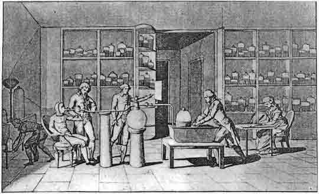
図１ ラヴォアジエ夫人によるスケッチ。夫は助手セガンの炭酸の排出を測定し、彼女はその記録をとっている。（Wellcome Institute, London）
ラヴォアジエは数学者ラプラスと協同して、二酸化炭素生成に伴うモルモットの熱発生を、ロウソクや石炭が燃えるときの結果と比較した。熱発生は氷カロリメーターで測定した。ここで発生熱は、動物または燃えているものを入れた内室の周りの氷から溶けて出る水の重量に比例した（5,6）。正確とは言えないが結果は彼らが信ずるように、モルモットの組織内で有機物質が燃えると考えることができた。カロリメーターのその後の進歩については、栄養学小史（その二）に譲る。
ラボヴァジエは呼吸の次の研究に進んだが、“恐怖時代”の1793年に逮捕され、牢獄につながれた。1794年の裁判の日に彼は処刑を少し延ばして実験を一つさせて欲しいと懇願した。しかし、“共和国は学者を必要としない”と判事は答え、午後にラボヴァジエはギロチンにかけられたと言われている。
フランス革命の時期においては、科学の進歩だけでなく新しい精神が働きだした。古い仮定を認めずに新しく始めるという考えである。この時期は新しい栄養科学の始まりによって特徴づけられ、化学革命は栄養学の発展に必要な道具を準備した。フランスの若い先駆者は次のように述べた。“栄養学はこれまで思索や巧みな仮説の対象であった。しかし我々の実際の知識は不十分であり、我々の想像を満足させるだけのものであった。もしもっと正確な事実に到達できたら、そのような事実は医学の実用に供せられるであろう。”
この筆者はマジャンディであった。彼は革命期のパリに育ち、生理学に転ずる前には外科医として開業していた。生理学における彼の最初の研究は1816年に科学アカデミーに報告されたもので、動物は摂取した窒素含量の低い食品を空気中の窒素によって“動物化”できるか否かを、直接に問いかけたものであった。空気中にはもちろん十分量の窒素が存在するので、動物が植物性の食品を消化するときにこのような結合が起き、これらが成長や使い尽くされた物質の補充のために動物組織に取り込まれることを示唆する化学者もいた。
マジャンディの有名な実験は、それ以前に試みられなかったのが不思議に思われるほど、非常に単純なものであった。それは窒素を含まないが栄養物と考えられてきた単一の食品を犬に与える実験であった。ここで犬は植物性の食事も動物性の食事も摂ることができる動物種である。最初の犬に与えたのは砂糖であった。犬は最初の約２週間はよく食べたが、その後に体重は減少し始め、角膜潰瘍を生ずるようになった。１月後に犬は死んだ。彼はこの実験を繰り返し、続いてオリーブ油、アラビアゴム、バターだけを食事に与え、オリーブ油では角膜潰瘍を起こさなかったことを除いて、すべて上と同じ結果を得た（8）。
彼の結論は、まずこれらの食品はよく吸収されるが優れた（“犬が必要とするすべての物を与える”の意味と思われる）ものではないこと、第二に犬の組織にある窒素は全部ではないにしても大部分は摂取した食品に由来するもの、であった。現在の観点から見ると、彼の結論には欠陥がある；すなわち、含窒素物質の他に彼の食品には他の物質が不足している可能性があるし、彼の実験には“砂糖 ＋ アルブミンまたはグルテン”のようなポジティブ・コントロールが無いことであった。1816年の論文に彼は“犬はパンだけで非常に良く生きられることを誰でも知っている”と書いた後で、実際に実験をして“犬は50日以上生きることは出来なかった”ことを見いだした。彼の最終の結論は現在の“食事ガイドライン”にも反映されているように“食べ物の多様性と多種性は衛生の重要な法則である；さらに、このことは直感が我々に示す”（9）であった。
この頃、骨を煮沸して得られる窒素含量の高いゼラチンは、フランスの病院で肉の経済的な代用品として使えるかどうかが、論じられていた。マジャンディはこの問題を解決するために更に実験をするように科学アカデミーから要請された。パラドックスと見られるような結果が得られたので、彼は10年後に次のように報告することを余儀なくさせられた。すなわち、“研究でよく見られるように、予期しない結果が筋の通った予想と矛盾した”と。ゼラチンは犬にとって完全な食事ではなかったが、水で晒した肉も同様であった。彼は肉から濾し出された必須物質は何であるか化学者が研究するように示唆した：“多分、鉄または他のイオン、脂肪性物質または乳酸であり得る”（10）と。実際、この問題がアメリカでマッカラム（E.V.McCollumn）によってもっと使い易いモデルであるラットを使って再検討されたのは、さらに75年後のことであった。
マジャンディの研究の背後には、言及はされていないが重要な仮定があった。それは他の研究においても動物を人間のモデルとして使用できること、および人間の身体は動物の身体と本質的に同じ一般的な性質を持つこと、であった。これは部分的にせよ、フランスにおける比較解剖学（訳注：動物の解剖学）への興味に由来すると言えるかも知れない。
1830年代のフランスでは、マジャンディと異なる背景を持った活発な研究者が、動物の窒素含量の多い組織の起源を同じように研究していた。それは化学を鉱山技師養成の学校で学んだブサンゴーであった。彼は南アメリカにおける危険な地理学的調査から帰り、農園所有者の令嬢と結婚し、農学に興味を持つようになった。彼はパリのソルボンヌ大学に職を得て、フランス化学の指導者の一人であるデューマと共同研究を行い、１年をパリと農園の両方に分けて過ごすことになった（11）。
まず作物の研究を行い、豆科植物は生長に際して空気中の窒素を利用できるが、穀類は出来ないことを示した。続いて牛や馬の研究に転じた。牛や馬の飼料に窒素はきわめて少ないことが知られていた。彼の研究方法は動物たちの体重を一定に保たせ、３日のあいだ飼料、排泄物および牝牛のばあいはミルクを集めて窒素含量を分析し記録することであった。馬は24時間に全部で8.5kgの干し草と燕麦を食べ、１日の窒素摂取量は139gであり、尿および糞に回収される窒素量は116gであった。牝牛は干し草とジャガイモを与えられ、１日の窒素摂取量は201gであったが、回収された窒素はミルク中の46gを含めて175gに過ぎなかった（表１）。彼は、動物たちに与えた飼料には必要な窒素が含まれていて、大気から窒素を取り込むという仮説は不要である、と結論した。
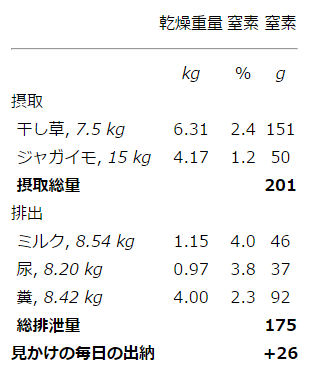
表１ 乳牛の毎日の窒素の摂取量と排出量（12）
この研究は今日まで何千回と行われている“窒素出納試験”の最初の例であると思われる。しかし残念なことにこの頃までに開発された唯一の窒素測定方法によると、彼は試料を乾燥させなければならなかった。彼が尿や糞を乾燥している間にアンモニアが失われたと思われる。定常状態にあると思われる動物たちで正の窒素出納が見られたのはこのためと考えられる。
草食動物の出納試験を行う前にも、ブサンゴーは植物性食品の相対的な栄養価値は窒素含量によって評価できると述べていた（14）。それは、ほぼ次のような理由によると考えられる。“マジャンディは、窒素を含まない食品によっては生命の維持ができないことを示した。従って植物性食品の栄養価値は主としてそれに含まれているグルテンおよび植物性アルブミンにある”と。この頃の研究者たちは、動物体にミネラルが含まれていて、これらを食物から得なければならないことを、確かに知っていた。もっと前にも２人の研究者たちは“マメ科の食品はデンプン、動物物質、リン酸、石灰、マグネシア、カリ、および鉄を含んでいるので、栄養価が高い。マメは血液を作り色をつけ、骨の栄養になる栄養物や物質を一度に供給することができる”（15）と書いた。多分このような批判にたいしてだろうが、ブサンゴーは次のように弁明している。“私は窒素を含む物質だけが動物の栄養に重要であると言っているわけではない。しかし植物で窒素含有物質の多い場所には、栄養に必要なその他の有機物質および無機物質が含まれている”（16）。この文章から見ると、彼が“有機物質”と言っているのはデンプンであって、仮定的な微量栄養物でないことは明らかであった。
この時期に研究者たちが、完全な食事として、他の栄養物を必要と考えなかったのは何故であろうか？ 水兵たちのあいだで壊血病が問題となり、果物や野菜がこの病気の予防に役立つ事実は他の栄養物の存在を示したのではないかと考えるであろう。しかし抗壊血病物質の臨床研究で有名なリンド（James Lind）自身すら、これらの物質は海の空気の悪い影響に対抗するものであって、陸地に住んでいる人たちにとっては、マラリア流行地に住んでいない人たちにキニーネが無用なのと同じである、と信じていた（17,18）。さらに、フランスの研究者たちが使っていた犬はこのような物質（アスコルビン酸）を必要としなかった。
上に述べた結果から、ブサンゴーの共同研究者であった化学者デューマは、動物組織に多い含窒素物質を合成できるのは植物だけであると結論した。彼はさらに一般化して、動物体内で起きる反応は全体的には酸化であることから、動物は植物食品から得られる物質を酸化するだけであるとした（19）。
この頃、ドイツの指導的な有機化学者リービッヒが前面に出てきた。彼もまた“動物化学”の問題に興味を持ち、ブタにデンプンだけでほとんど脂肪を含まないジャガイモを与えるとブタの太ることがよく知られているので、デューマは間違っていると書いた。動物は炭水化物を脂肪に変えることが出来、これは酸化ではなく還元だからである。
これはこの領域で議論の余地がない権威であったフランスの研究者にたいする挑戦であり、ブサンゴーは他の先駆的な研究でこの問題の検証を試みた。１匹の若いブタの死体を分析し、同時に同腹の同じ体重のブタにさらに３月のあいだ餌を与えた。第２のブタの死体を分析すると、13.6kgの脂肪が増えていた。ここで与えた餌には6.8kgの脂肪しか含まれていなかった（20）。
従ってこの注意深い実験はフランス学派の誤っていたことを示した。ブサンゴーとデューマの二人は動物での研究を行わなくなり、リービッヒは実際に動物飼育実験をしたことは無いのに、新しい権威者となり、生理学および栄養学で自分の考えを押し進めるようになった。これらの考えの大部分は完全に誤っていることが次第に明らかになってきたが、少なくとも他の人が研究を行い検証をする要因になった。
上に述べた研究が進行している間に、化学でもう一つの重要な発展がなされ、その後の栄養学の研究で利用されるようになった。イギリス北部の、貧乏で主として独学の学校教師ドールトンは、重要な考えを持っていた。すなわち、すべての元素は分割できない粒子である原子から成っており、それぞれの元素はすべて同一の原子から成るという考えであった。化学結合は２つまたはそれ以上の異なる原子が強固な結合をすることによって起き（21）、すべての化合物において異なる元素の割合は一定であること、および異なる化合物において同じ2つの元素の間に単純な割合が成立すること、により支持された。例えば“二酸化炭素”と呼ばれる気体は“一酸化炭素”に比べると（炭素の重量あたり）正確に２倍の酸素を持っていた。最後に気体は容量にすると単純な比で結合している。たとえば３容量の水素は１容量の窒素と結合して、正確に２容量のアンモニアガスとなった（22）。このことから、もしも水素、酸素、窒素のような元素は２個の原子が結合して１個の分子を形成しているとすると、同じ容量の気体は同数の分子からなっていることになった。
しばらくの間、炭素および酸素の原子量は現在の半分ではないか、という議論が行われた。しかし、その当時に得られた分子式を直すのは容易である。たとえばイギリスでプラウトは尿素を改良方法で分析して C2H4N2O2 の分子式を得たが、炭素と酸素の原子量を２倍とすれば現在の CH4N2O が得られる（23）。10年ほど後にドイツでヴェーラーはシアン酸銀を塩化アンモニウムと加熱して尿素が得られることを見いだした。彼は感激して“腎臓を使わないで尿素を作ることができた”と旧師リービッヒに報告した。もちろん尿素は排泄物に過ぎないが、この合成は生体で作られる有機化合物が“生命力”（ヴァイタル・フォース）の助けを借りないで合成できる。
ヴェーラーはリービッヒとともに有機化学における重要な概念を発展させた。これは“反応基”（ラジカル）の考え方であり、他の試薬と結合するが本来の性質を保ち、さらに反応することによって回収できるものであった（＊：フリーラジカルと混同しないようにラジカルは“反応基”または“基”と訳すことにした）。最初の例はベンゾイル基である。ベンツアルデヒドから出発し、酸化して安息香酸を作ったり塩化物を作ることなどができるが、適当な還元反応によって最初のベンツアルデヒドに戻すことができた（24）。
この頃までいわゆる“動物物質”はアルブミン、フィブリン、カゼインなどのように溶解度など物理的性質は異なるが、すべて窒素含量が約16％である、種々の形のものと理解されていた。1839年にオランダの研究者ムルダーはこれらすべては共通な反応基にリン、または硫黄、または両者が結合したものであることを示唆し、その仮定的な反応基には、動物界における第一のものであることを示すために、ギリシャ語に由来する“プロテイン”の言葉を利用した。彼はこの反応基を“pr”で示し、卵アルブミンを“Pr10・SP”、血漿アルブミンを“Pr10・S2P”とし、反応基そのもの分子構造は“C40H62N10O12”であるとした（25）。
リービッヒはこの考えを熱狂的に受け入れ、彼が植物組織から抽出した類似物質も４原子の炭素と１原子の窒素を含むと報告した。彼はさらに次のようなことを示唆している。“プロテイン（蛋白）”反応基を合成できるのは植物であるが、他の成分を加えたり加えた成分を取り去って、たとえばアルブミンをフィブリンにするなどの能力を持っているのは動物である（26）、とした。パリで研究していたデューマとカウールも、カセインと血清アルブミンで C:N 比が４：１であることを見出したと書いた。しかしリービッヒが植物カセインと呼んでいたマメ類から抽出される“レギュミン”ではこの比は3.25:1に過ぎなかった。マメ類は栄養価が高いと考えられてきたが、リンや硫黄を付けたり外したりすることによってアルブミンにすることが出来ないとしたら、これは問題であった（27）。
リービッヒもまたムルダーの考えを受け入れたことを後悔した。彼の研究室の人たちは、ムルダーが記載したようにアルブミンから硫黄を除いて“プロテイン反応基”を得ることはできなかったし、予想する割合のリンや硫黄を種々の物質で見出すことは出来なかった。リービッヒは彼自身が主張していたことも否定してムルダーを批判し、ムルダーを憤慨させた。兎も角プロテイン反応基の概念は文献から消え去り、“プロテイン”という言葉は以前に“動物物質”と呼ばれたすべての物質にたいして使われるようになった。
この間、リービッヒは広く読まれた本の“動物化学すなわち有機化学とその生理学および病理学への応用”を出版した。この中で彼は筋肉の収縮のためのエネルギーはタンパク質の爆発的な分解によって与えられ、その結果として尿素が作られ、排泄される、と論じた。これは彼の分析によると筋に炭水化物や脂肪を検出できなかったからである。従ってタンパク質は身体の機械であるとともに燃料となる唯一の真の栄養物であった（28）。
もしもこれが正しければ食事の他の成分は何の役割を持っているのであろうか、運動のときに炭酸が著しく増加するのは何故であろうか？ リービッヒの説明によると呼吸の増加は心臓その他の組織が過熱しないようにするためであった。しかし、これによりもっと大量の酸素が組織に供給され、その結果として酸素による障害が起きタンパク質が失われることになった。脂肪や炭化水素は優先的に酸化されることによって余計なものを取り去ると考えていた。
リービッヒの本は最初は巨大な知的総合を示すものと一般にみなされ、多くの人たちは彼の考えに従うようになっていた。たとえばエディンバラ大学の内科学の教授は、スコットランドの刑務所における深刻な時期外れの壊血病の調査を要請されたときに、タンパク質の摂取不足によるのであろう、とすぐに結論した（29）。しかし彼の計算によるとタンパク質摂取は十分量の135gであった。しかしこのうち15gだけが動物由来で、102gはグルテンであった。彼はグルテンを動物タンパク質にする能力が身体に十分ではないので、食事中のミルクの割合を増やすことによって、動物タンパク質の摂取を増やすよう示唆した。他のスコットランドの医師は、レモンジュースの壊血病予防効力は確認されているが、これにタンパク質は殆ど含まれていないから、タンパク質によるとは考えられない、と答えた（30）。
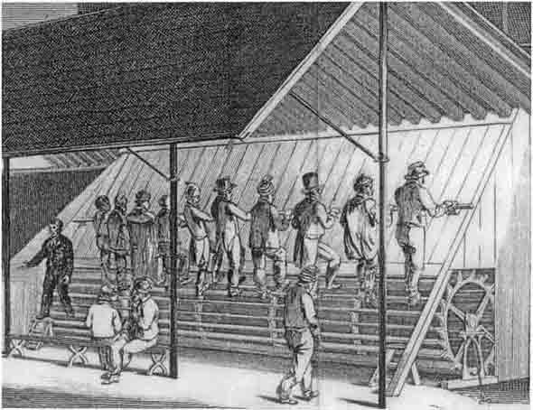
図２ ロンドン刑務所の足踏み車（トレッドミル）．
スミスは労働日と休息日の尿素排出を比較したり、労働に応じて自分の炭酸排出が増えることを示すのに、このような装置を使った。これらの測定は筋が使う燃料やその能率を知るのに用いられた。（British Register, 1823）
スミスは労働日と休息日の尿素排出を比較したり、労働に応じて自分の炭酸排出が増えることを示すのに、このような装置を使った。これらの測定は筋が使う燃料やその能率を知るのに用いられた。（British Register, 1823）
筋活動にタンパク質の分解が必要であるという考えには、あまり活動をしない金持ちに比べて労働者はタンパク質を少ししか摂取しないことも、もう一つの難題であった。イギリスの医師であり生理学者であったエドワード・スミスは囚人の福祉に興味を持ち、足踏み車労働に注目した。８時間の労働とそれに続く時間の24時間、および休日24時間の尿素排泄を測定したが、差はなかった（31）（図２）。この結果は、エネルギーはすべてタンパク質の分解に由来し、これにより尿素が作られる、としたリービッヒの見解と矛盾するものであった。
この話の次の段階は、エネルギー保存法則に関する基本的研究の一部をなすものである。この研究の進歩は誰か一人に帰させることはできないが、余暇にこの研究をしていた若いイギリス人、ジュールは、熱の仕事当量の正しい値を最初に提出した。この値は熱の発生と関連してヒトの筋運動の能率を計算するのに用いられた。囚人の尿素排泄についての研究で言及した上記のスミスは、種々の条件で二酸化炭素を測定できる携帯用の装置を開発していて、囚人用の足踏み車で働いたときの自己の二酸化炭素排出の増加分を測定し、ヘルムホルツはこれを使ってヒトの“エンジンは約25%の能率で働く”（33）とした。
タンパク質だけが筋運動の唯一の燃料であるとするリービッヒの考えを検証するために、スイスの２人の研究者、生理学者のフィックと化学者のウィスリツェーヌスは決定的な実験を行った。彼らは頂上まで登る比較的に楽な路があり頂上にホテルがあるスイスの山の麓に行った。彼らは登山前および最中には低窒素の食事をし、登山の最中および後6時間の尿を採取した（34）。排泄尿を分析してふつう使う換算係数“N x 6.25”を使って計算すると、尿中の窒素量は平均で35.0gのタンパク質に相当するものであった。彼らはこのタンパク質燃焼により得られるエネルギーを計算したが、炭素と水素が燃えるときのエネルギー値しか得られず、これは１グラムのタンパク質あたり6.73kcalの高い値であった。この値を使っても、得られるエネルギーは彼らが登山において重力に抗して行った仕事よりも少なかった。
同じ頃、フィックの義理の兄弟であるイギリスのフランクランドは食物や尿素の燃焼熱を直接に測定する方法を開発していた。排泄される尿素に残っている総エネルギーを差し引くことにより、彼はタンパク質について4.73kcal/gの値を得た。この係数を使うと、代謝されたタンパク質の平均量（35g）から得られるエネルギーは153kcalであった。熱の機械的仕事当量をkcalあたり423“kg・重力に抗してのm”とすると、153kcalから得られる機械的仕事は64,700kg・mとなる。
登山にさいして、重さの平均が71kgの２人は重力に抗して1956m登っているので、一人あたり最低138,900kg・mの仕事をした（表2）。この値は体タンパク質が分解して得られるエネルギーの２倍以上であり、筋が100%の能率で働き、心臓その他の仕事を無視しても、消費された燃料の大部分はタンパク質以外すなわち脂肪または炭水化物、または両者であるに違いなかった（35）。フランクランドは、筋は仕事にさいして自分自身を消費することはなく、全く他の燃料を使って無傷のままでいる点で蒸気機関と似ている、とした。
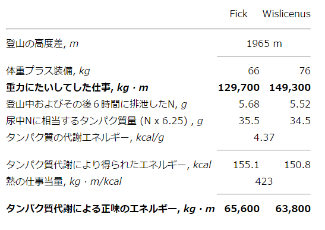
表２ フィックとウィスリツェーヌスの登山における、仕事量と代謝エネルギーの関係（34）
リービッヒおよび弟子たちはイヌを使って同じような結果を得たが、彼は上記の結論を受け入れるのを好まなかった。生体は試験管内（イン ヴィトロ）の反応よりも大量のエネルギーを得ることができるとか、タンパク質は徐々にエネルギーを放出することができるので、休止筋は時計のゼンマイのように機械エネルギーを蓄えることができる、とか示唆することによって、受け入れを避けた（36）。高タンパク質食事の評価が明らかになってきても、これについてドイツ人の熱狂は続いた。これは次の章に述べる。
いま取り扱っている時期にアメリカでは、ほとんど栄養学についてのオリジナルの研究がなされなかった。しかし、２人の名前は覚えている必要がある。一人は21歳に結核で悲劇的に死んだ医学生のジョン・ヤングである。彼は1803年の卒業論文に消化についての多数の実験を記載している。彼は胃から逆流した内容が酢酸発酵をしていないことを発見した。これはその当時の考えに反していた。彼は袋詰めの食品をカエル、ヘビ、トリの胃で消化させる経過を追って、肉食動物は少なくとも植物性食品を溶解することができるし、逆に菜食動物も動物性食品を溶解できることを示した（37）。
20年ほど後にアメリカ陸軍の外科医ボーモントは先駆的な生理学者になる機会を得た。遠隔地の交易場で若い男が誤って胃に銃創を受けて永久的な瘻管が形成され、これを通して食物を入れたり出したりすることが出来るようになった。この若者は貧乏だったので、ボーモントは自分の家に連れて帰って、断続的ではあったが10年にわたり研究対象とした。彼は胃液にはいつでも塩酸が含まれ、食事に反応して分泌されることを観察した。さらに、脂肪性の食事はゆっくりしか消化されないが、“小さく分けられる”と促進されることを彼は観察した（38）。
この頃には、胃は消化の重要な場所と考えられていた。しかし、膵臓からの小腸への分泌は胆汁の乳化作用とともに脂肪をグリセロールと脂肪酸に消化し吸収するのに重要なことを、1850年にベルナールは発見した（39）。このこと、および次章で述べる小腸におけるタンパク質分解活性の発見によって、純粋に胃による消化はあまり重要で無くなった。
ロンドンのキングズ・カレッジの内科教授バッドは、1842年に“栄養不足による疾患”と題する記念すべき講演を行った。次は彼の講演の冒頭の一部である。“生理学者およびもっと現実的には医師にとって、‥‥栄養不足による疾患以上に重要なものは無い。‥‥疑いも無くこれらの疾患はしばしばこの大都市の極貧の人たちによって示されるが、‥‥それが起きる環境を我々が熟知していないので、真の原因を知ることができない。船、軍隊、刑務所、保護施設などで‥‥多数が一つの病気に罹ると、我々の注意は喚起され、彼らの環境における異常を考えることによって、その原因を見つけることができる”（40）。
1785年より前に体系的な栄養学の研究は行われなかったとこの章の始めに書いたが、これには一つだけ例外があった。この例外についてこれから述べる。これは壊血病の種々の治療法について、対照を置いた先駆的な臨床研究であり、1746年にリンドが航海中の水兵に行ったものである。リンドは船乗り組みの30歳のイギリス海軍外科医であり、大学教育の経験は無かったが、壊血病の問題に特別な興味を持っていた。彼は壊血病の病状が同じ程度の12人の水兵を選び、２人組に分け、２週間にわたって、この病気に効果があると言われている治療法をそれぞれの２人組に行った。この詳細については他の論文（41,42）に譲るとして、現代の読者にとって顕著なことだけを挙げると、レモンとオレンジを与えられた２人組は６日後にほとんど回復したが、希硫酸や酢を与えられた組は２週間しても良い結果が得られなかった。
リンドの研究は、しばしば柑橘類が壊血病の治療や予防への有効性を示したこととして記載されている。実際を言うと、これは約200年も前から知られていたが、実行できていなかった。オレンジとレモンも果汁も冷蔵技術が発達する前には、カビが生えるので長期の航海のあいだ保存することができなかった。このためにロンドンのカレジ・オブ・フィジシャンズでは他の種類の酸を代わりにする理論付けをしていた。壊血病は“腐敗”病であり、動物組織は腐敗するとアルカリ性になると考えられていた。柑橘類のジュースはその酸性によって治療効果を持っているので、硫酸（使用前に薄める！）や酢のような安定な酸も同じ効果を持っている筈であると考えた。その結果、船に乗り組んでいる外科医は古くから硫酸を供給されていたが、学問的にその効果は検討されていなかった。
リンドは大学教育を受けて医師となった後の1753年に、彼は壊血病についての論文に次のように書いた。“イギリス海峡艦隊は長年にわたって硫酸を配給されてきた。それにもかかわらず、しばしば千人ほどが哀れなことにこの病気にやられてきた‥‥。医療（フィジック）の理屈からは‥‥極端まで行うことが絶対に必要であるが、いったい役に立っているのか害になっているか判らない”と（43）。
もしも他の酸がレモンジュースの代わりにはならず、レモンやそのジュースが長期間の航海に持参するのに不安定すぎるとしたら、どうすれば良いか。リンド自身は浅いボールに入れて沸騰水の上でゆっくりと濃縮して濃いシロップ（彼はロブと呼んだ）にすることを考えた。これを試みたが、実際は役に立たなかった。もっと効果があり、水兵たちが好んだのは、ラム酒またはブランデーをジュースと一定の割合に混ぜたものであった。他の方法はジュースからクエン酸を抽出して艦隊に配給することであった。不幸なことに、多くの著者たちはクエン酸がその活性成分と考え、実際はレモンジュースを与えたのに“クエン酸を与えた”と記載した。ある場合はこのことが明らかであったが、ある場合は明らかでなかった。何年も不明確な状態が続いたが、真の純粋なクエン酸は抗壊血病効果を持たないことがついに合意された（44）。
リンドは、皮膚にある汗の穴は海の空気によって詰まるので毒は外に出ることができなくなって貯まると考え、柑橘類の果物は“石鹸のように希薄化し分解する作用”（洗剤作用）を持っているので穴の通りを良くすると信じていた。彼は壊血病は陸では起きず、水夫たちのように抗壊血病物質を必要としないと信じていた。しかし、そうでは無かった。イギリスの刑務所で時によって20回ほども壊血病が発生していたことは1848年までに明らかになった。囚人たちの病状は海上とまったく同じであった。このような発生を説明できる共通の要因は、発生のしばらく前に食事からジャガイモが除かれていたことであった。ジャガイモを元に戻すと、病気は消え去った（45）。
抗壊血病物質としてのジャガイモの重要性は、1845年から1848年の間に確認された。これはカビによってヨーロッパにおいてジャガイモの不作が続いた年であった。ジャガイモを主要なエネルギー源としていたアイルランドでは、悲惨な飢餓によって予期される壊血病を覆い隠されていた。イギリスでは穀類の収穫があったので全体的にエネルギー不足は無かったが、何回にもわたって壊血病が発生し、今回は刑務所だけでなく一般住民にも見られた。スコットランドの刑務所における深刻な壊血病の発生についてはすでに記載した。これは、タンパク質が“真の栄養物”であり、したがってもしも食事の質が悪いならば、タンパク質の不足であると信じたリービッヒの信者と関連させて述べた。実際的な面から言うと、ジャガイモも果物も得られないときに、緑食野菜は有効な抗壊血病物質であった。
供給の面から食物供給に制限があるときには、いつも陸地壊血病が問題となり続けた。たとえばカリフォルニア・ゴールドラッシュのときの鉱山師、クリミア戦争のときの兵隊、アメリカ南北戦争のときの捕虜、1871年のパリ包囲のときの一般市民（46）がその例である。いずれの場合にも、新鮮な野菜または果汁が再び得られるようになると問題は解決した。
19世紀が進むと船の旅が速くなり、港で新鮮な食べ物を得る機会が無いような長い航海は稀になり、それとともに海の壊血病も稀になった。しかし、北極探検はこの一般化の例外であった。1875年に英国海軍はそれまで探検家が到達したよりさらに北の探検を行った。海軍は壊血病は問題ではないと考えていた。ナポレオン戦争のときにフランスの港を封鎖し長い期間にわたって海上に留まることができた。これはシシリー島からの組織的なレモンの供給によるものであった。上層部は西インドからのライムを使うことにした。これはレモンより酸っぱいので抗壊血病性は強いはずと考えたからである。イギリス本国でアルコールを加えて瓶詰めにした。
２艘は122人を乗せて1875年５月に出航し、北緯82度の氷中で冬を越し、翌春にソリで探検に出発した。６月までに60人が壊血病にかかり、4人が死亡し、船は帰ることになった。これは大きなスキャンダルとなり、詳しい調査が行われた。乗員の毎日の配給食には４オンスの“保存野菜”、１オンスのピックルズ、１オンスのライムジュースが含まれていた。ある批評家は、リービッヒが生理学を新しい科学として抗壊血病物質理論は致命的な打撃を受けた、と述べた。他の人たちはエスキモーは極北の地で果物や新鮮な野菜が無くても健康なのは何故か調べなければならないと主張した（47）。次章に見るようにこの問題によって新しい理論が採用され、かなりの間にわたって探検家たちは誤った方向に導かれ、知識は少なくとも20年も昔に戻ることになった。
長い航海で出会うもう一つの問題は夜盲症であった。これは時には壊血病とともに起きることもあった。船の外科医たちは夜盲症を壊血病進行の初期症状と考え、両者は食事に新鮮な緑色野菜を加えるのが有効であると考えていた。しかし、多くの人はこれらは別の疾患であると考えた。それは両者が必ずしも一緒に出現しないし、夜盲症ではしばしば角膜に潰瘍を生じたからである（48）。
19世紀の初頭にこの病気を魚油またはタラ肝油で治療に成功したという報告が何人かの医師によってなされた（49,50）。また、このような眼疾患の患者にいずれかの動物の肝臓を調理して与えるという古くからの民間療法があった。この方法は1950年代におけるオーストリー海軍の世界一周航海において試された。喜望峰からジブラルタールへの長期にわたる航海で350人の乗組員のうち60人が夜盲症になった。前から機会があれば治験をするように言われてきた船乗り組み外科医は、ジブラルタールでウシの肝臓を得て、60人全員に与え、結果は“真に奇跡”であったと報告した（51）。しかし彼は医学誌で“栄養の病気であると言うのは不真面目な結論であり、この問題についての文献を知らない人間の自己顕示欲である”と攻撃された。
ビトーは角膜の斑点（＊：ビトー斑）が夜盲症と関係あることを示して名を残したフランスの医師であるが、彼は食事によってこの病気の患者を治すことができることは述べず、この病気は本質的に“純粋な生命力に関係するもの、または神経性のもの”と1863年に記載した（52）。
1881年にイギリスの医師はタラ肝油を与えた患者でこの状態が良くなったと報告し、患者は“ある種の緊張（トーヌス）または栄養の欠乏による”可能性を示唆した。しかし、これは未だ一般的に確立された結論ではなかった（53）。孤児院の医療に責任を持っているあるドイツの医師は、孤児院でこの病気を診察し、子供たちは良い食事を与えられているから、この病気は感染の結果に違いない、と1884年に述べている（54）。
頚の前部の腫れである甲状腺腫（ゴイター）は千年にわたり特定の地域で知られてきた。この地域では少数の新生児がクレチン病患者として産まれ発育が阻害され知能が低かった。甲状腺腫患者にとって乾燥した海藻や海綿、またはそれらを燃やして得た灰を与えるのが古くからの民間療法であった。1812年にこのような灰からヨウ素が得られフランスの化学者は甲状腺腫の治療に使うことを示唆した。しかし与える量によっては有毒なことがしばしば見つかり、この治療法はふつう使われなくなった（55）。この章の関連する最後の時期に、ヒルシュは広範囲にわたる学問的な総説の中で、ヨウ素欠乏説は“短命な学説であり、‥‥風土病の甲状腺腫やクレチン病は感染症に属すると考えるべきである”と述べている（56）。
極地壊血病、夜盲症、甲状腺腫のようにますます多くの病気が、直接的には微生物感染により間接的に微生物の毒素生産能力によって説明されるようになるという信念が育ってきた。病気の微生物説は人間を苦難から救うのに莫大な貢献をしたことは疑いも無いが、少なくともある時期には、他の種類の疾病について確定された事実を老婆の繰り言として取り扱うことになってきた。バッド教授の講演を再び引用する。“多数の人たちは‥‥量的にも種類の上からも不足な食事を摂取し‥‥不思議な種類の病気が起きる。‥‥その原因は明らかになり、治療が行われるが‥‥その教訓は忘れられ‥‥栄養の重要性についての大量で重要な知識は、短期間の後に異なる地域における、大規模な病気の経験によって大金を払って購入される”と（57）。
1885年以前、ほとんどすべての栄養学研究は西ヨーロッパで行われ、大部分はタンパク質またはエネルギーの要求に関連していた。この方向は1880年代も続いたが、次の25年には世界のもっと広い部分で重要な新しい方向の仕事がなされ、栄養要求について我々の理解は長期の観点で広いものになった。
この頃までアメリカでは栄養学についての重要な研究はほとんど行われていなかった。アトウォーターはこの状態を変えようと決心していた。彼は1844年にニューイングランドで生まれ、1885年にはウェスリアン大学の化学の教授になった。彼はミュンヘンに行って、リービッヒの愛弟子であるフォイトの研究室で使われていた窒素出納を数月にわたって研究した。フォイトは次のように信じていた。すなわち、充分の収入があって好きな食事を摂ることができるならば、健康で生産的であるために充分なタンパク質を含む食事を直感的に選ぶことができる、と。彼は中程度の強さの労働をしている平均的なドイツの労働者は毎日118グラムのタンパク質を摂取していると推定し、これが彼の標準となった（1）。アトウォーターはアメリカの労働者は一般に高収入でもっと食べていることを知り、彼らはより激しく働くので、標準を毎日125グラムとみなした（2）。
後になってみると、タンパク質のようにかなり高価なものを実際に大量に摂取する必要があるかどうか質問してはならなかったことが、皮肉である。どうやら彼はドイツの栄養学者を権威者とみなし、自分は新米と思っていたようである。フォイトはタンパク質の摂取量がずっと少ない菜食主義者は窒素平衡を保ち得るが、彼らは“自分自身を不利な状態に置いている”と考えていた（3）。アメリカのグループは、タンパク質が直接に筋収縮の燃料に使われないとしても、“努力しようとする”ための神経エネルギーに使われると考えていた（4）。
この時期におけるアトウォーターの仕事の主な点は食物を近似システム（プロクシメート システム）（窒素、線維、灰、エーテル抽出物、水分、“差分による炭水化物”）によって測定し、この値を使ってもっとも高価であるタンパク質の必要量を経済的に得るにはどうすれば良いかを、貧しい人に教えることであった（表１）。タンパク質とエネルギーを経済的に得る観点からだけで食事を推奨することの不幸な効果は、果物や緑食野菜が無くても構わない贅沢品にすることであった。この時期に労働者家族の収入の約50%は食品の購入に使われていた。
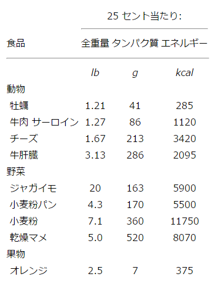
表１ 一定金額の食品当たりのタンパク質およびエネルギー：アトウォーター（21）より再計算
タンパク質の高い標準にたいする挑戦はイェール大学の生理化学教授のチッテンデンによって最終的に行われた。彼自身のいわゆるリューマチ状態が、食物とくに肉の摂取を減らすことによってあるていど良くなり、タンパク質の摂取量が１日あたり40グラム（150ポンドの標準体重では48グラム相当）以上でないにもかかわらず身体活動も精神活動も完全に保たれていることに彼は感動した。
チッテンデンは低タンパク質食事について三つの対照実験を組織した。第一はチッテンデンと３人の研究者が対象となった。“標準”体重に合わせて毎日平均62グラムのタンパク質を含む食事を摂取したが、６月のあいだ健康で窒素平衡が保たれた。第二はアメリカ陸軍の11人の兵士について行われ、毎日のタンパク質標準摂取量は61グラムであったが、健康で身体状態も良好であった（図１）。最後の実験では7人のイェール大学運動部学生のグループが毎日64グラム（標準化）のタンパク質を摂取した。運動能力は保たれ、体調はこの実験によって良くなったと彼らは述べた（5）。
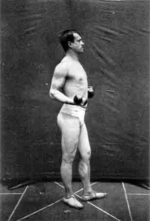
図１ 良好な身体状態を示している低タンパク質食試験者の写真。チッテンデン（5）より。
このような食事は“生理学的経済”であるとチッテンデンは推奨したが、他の人々は容易に受け入れず、繁栄している国で一般に高タンパク質食であるのは両者のあいだに重要な関係があり、短期間の実験では明らかにできないと論じた。チッテンデンは批判者たちが原因と結果を逆にしていると答えた。彼らは大量のタンパク質を摂取しているので金持ちになったのではなく、肉その他の高価なタンパク質性食事を摂取できる充分な収入になったのでそのような食事をしている、と（6）。その後の研究はすべてチッテンデンの観察を確認するものであった。
フォイト、アトウォーター、チッテンデンの著作を通じて、すべてのタンパク質は同じ質であるという断りなしの仮定が存在していた。したがってアトウォーターは肉タンパク質をマメタンパク質で置き換えても支障がないことに疑いを持っていなかった。後になってみると驚くべきことである。何故かというと、すべてのタンパク質は共通の反応基を持つというムルダーの仮説は否定され、炭素：窒素の比さえもマメから抽出された“レグミン”と他の動物タンパク質とは違うことが報告されていたからである（7）。
19世紀の大部分の間、ムルダーの理論が潰れた後でも、栄養学の研究者は、食物から取り込まれたタンパク質はほとんどそのまま吸収され、その後で必要とあればフィブリンがアルブミンになるように若干の変化を受ける、と考えていた。しかし、消化生理学の研究者は胃壁からある物質（ペプシン）が分泌されてタンパク質をより溶け易いものに変えることを示していた。リービッヒはこれを分子の凝集物を壊すだけのことであって、それによって腸管を通り易くしている、と考えていた。数年後に膵臓は他の物質（トリプシン）を分泌し、これはペプシンで処理したタンパク質をさらに分解し、凝集をせず羊皮紙を通過できず、チロシンとロイシンを含む物質にすることが、見出された。このことについては、詳細な記載と完全な引用文献がグリーンステインとウィニツの本にあり、この本は入手容易である（8）。
この頃にチロシンとロイシンは２つの化合物として知られていた。これらは化学者がタンパク質を強酸中で沸騰させて得たもので、最初は“アミノ体”と呼ばれ、後には“アミノ酸”と呼ばれるようになった。栄養学者たちはこれらの分解産物に興味を示さなかった。何故かというと、沸騰強酸中における分解は腸管内における温和な状態で起きるものとはまったく違うと考えたからである。しかし、生体系においてアミノ酸が産物として発見されたことは有意義なことであった。とくに酸処理によって得られる種々のアミノ酸の割合がタンパク質によって異なることを、分析者たちはすでに報告していた。
歓迎されない発見を避ける方法はいつでも存在する。1895年にチッテンデンは次のように書いた。“膵臓によるタンパク質分解は、摂取した余計なタンパク質を身体が最小のエネルギー消費で取り除く方法、と考えることができる”（9）。すなわち、彼は身体が必要とするタンパク質はかなり無傷の状態で吸収され、吸収される前に分解されるのは不要な余計なタンパク質であると考えていた。1902年でもドイツの教科書は同じことを次のように書いていた。“このように完全な分解は化学ポテンシャルの浪費であり、これらの産物が再結合することはあり得ない”（10）。
しかし、ドイツとデンマークの他の研究者たちは、アミノ酸混合物が食物タンパク質の代わりをするかどうか、研究していた。大部分の研究者が得た結果によると、肉タンパク質をペプシンとトリプシンで長いあいだ処理して無傷のタンパク質が存在しないようにしたものを成犬に与えるとタンパク質の代用になるが、タンパク質の酸水解物は中和して余計な塩を除いても代用にならなかった（11）。
タンパク質のある成分は強酸処理によって破壊されることが疑われていた。それはタンパク質またはその酵素分解産物はインドール誘導体の存在を示す発色反応を与えたが、酸水解物はそのような反応を与えなかったからであった。最後に1902年にケンブリッジで研究をしていたホプキンスとコールは、酵素消化液からインドールを含むアミノ酸であるトリプトファンを分離し、これが酸水解の条件では破壊されることを示した（12）。続いて1906年にホプキンスは他の研究者とともに、ゼイン（トリプトファンを含まない）だけを唯一のタンパク質源として与えたハツカネズミは、トリプトファンをサプレメントとして与えると、長いあいだ生きることを報告した（13）。さらに1909年にアプデルハルデンは、トリプトファンを加えたタンパク質酸水解産物を成犬に与えると、窒素平衡を保ちうることを見出した（14）。生長していないので、これらの実験はトリプトファンがタンパク質合成に利用されていることを示すものではなかったが、この有機化合物がある重要な機能を持っていることを示したものである。
18世紀末のラヴォアジエとセガンの研究に続いて、フランスとドイツの学者たちは種々の状態における動物の呼吸と熱発生を測定する装置を、徐々に改良した（15,16）。ついに1894年にルーブナーはイヌの尿素生産とガス交換を同時に測定し、熱発生と代謝している食物の燃焼熱が対応していることを示した（17）。
アトウォーターの研究に戻ろう。彼もまた食品のエネルギー値に興味を持っていた。彼のグループは混合食における炭水化物、タンパク質、脂肪の代謝エネルギーを、それぞれグラム当たり４、４、９kcalであることを確立した。これらの“アトウォーター係数”はルーブナーのものと少し違うが時の試練に堪えてきた（18）。
しかしアトウォーターの真の野心は、人間を長期間入れて熱発生を直接に測定する熱量計を作って研究を行い、栄養科学に基本的な貢献をすることであった。図２は人間の呼吸熱量計に必要な装置を描いたものである。しかし、熱発生を同時に測定するのはさらに複雑である。これは野心的で金がかかる装置であり、アトウォーター・グループはこれを作りテストするのに５年の年月がかかった。最初の目的は、人間が発する熱は体外（すなわちイン ヴィトロ）で同量の栄養物が燃えたときの熱と同じであることの確認であった。彼らはこのことをかなり正確に行うことができた（19）。
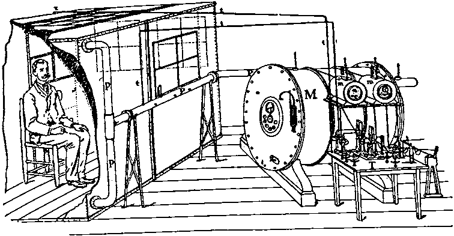
図２ 人間の呼吸熱量計。アトウォーターによる（15）。
次に彼らはエタノールを被験者に少しづつ与えるとエネルギー原になることを発見した（20）。酒類販売会社はこのことを宣伝に使ったので大きな問題となった。彼らのウェスリアン大学はメソジスト教会の支援を受けていて、この教会は完全禁酒を推奨し、アルコールは毒薬以外の何物でもないというパンフレットを配っていたからである。アトウォーターは万能の神は道徳の教えを真実でないことに基づくことを欲しないと答えた（21）。
アトウォーターは1904年に卒中で身体障害者になり、共同研究者たちは脂肪も炭水化物も燃えて得られるエネルギーは、少なくとも同じ能率で機械的仕事に使うことができることを示す論文の刊行を準備した（22）。その後で装置はアトウォーターの研究室から移されたが、彼の娘はグループの解散を知らずにベッドで寝ている父親のために、装置の支払いをしなければならなかったと言う悲しい物語があった。
アメリカでアトウォーターは“栄養科学の父”とみなされている。これは彼の研究成果だけではなく、アメリカ農務省における管理業務にたいする貢献である。彼は農務省において国内の多くの場所で食物利用についての研究を組織した。彼はまた農業試験所において長期間にわたる栄養の基本的な研究を行う政策を立ち上げた。この政策の成果は第３章に見ることができる。その一つはコネティカット試験場におけるオズボーンによるタンパク質のアミノ酸組成についての長期にわたる研究およびその栄養上の意義についてのメンデルとの協同研究である。
貧血、言い換えると萎黄病（クロローシス：緑の病気）は十代の若い女性によく見られる病気であった。血球数が減少し、それ以上にヘモグロビン水準の低下することが1885年までに一致した意見となった。さらに硫酸第一鉄をふくむ錠剤が有効であることも一般に認められた。しかし、この効果は鉄が腸管壁を通過しヘモグロビンに組み入れられることを示すとは一般に受け入れられなかった。第一に“動物界は硝酸カリウムとデンプンからタンパク質を作ることができないと同じように、無機鉄からヘモグロビンを作ることはできない”という理論的な反対であった（23,24）。すでに見たように植物界だけがタンパク質を作り得るというのは、19世紀の信念であった。
第二にドイツの研究者たちはイヌの肉食事に硫酸第一鉄を加えると糞中に回収された鉄は摂取したものに少なくともほぼ一致することを見出した。このような測定に本来ある変動を考えて、無機鉄は本質的に“不消化”であると彼らは結論した。ある研究の典型的な結果を表２にまとめよう（25）。
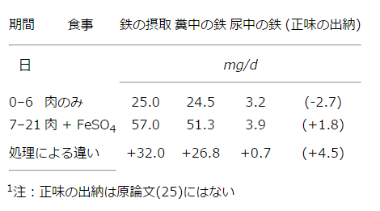
表２ 無機鉄が利用されないことを示す出納実験（25）
この頃には研究者たちはタンパク質の消化について多くの経験を持っていて、摂取レベルに関係しないで同じように消化されることを知っていた。したがって、他の栄養物の消化が、摂取レベルや被検動物の以前の状態に依存するとは疑っていなかった。
表２のデータを現在の観点から見ると、昔の著者たちが、肉だけについて得られた値から、有機鉄もまた同じように“不消化”であるという、同じように明白な点に気がついてないことを不思議に思うであろう。データから自分が見たいことだけを見るのは如何に容易であり、自分の予想に適合しないことには盲目であると言うことを、これは示している。
前にも言ったように、人間は思ったような結論を何からでも出すことができる。この場合も例外ではない。食物に有機鉄が不足することなどは無いというのが根拠であった。しかし消化不良の人では小腸で硫化水素が作られ、硫化水素は鉄（その他の金属）と強い親和性を持ち、有機鉄すらとも消化できない複合体を作り、栄養的に利用できないようにする、と考えた。硫酸第一鉄は硫化水素と結合し易いので、有機鉄と結合するような硫化水素は残らず、有機鉄は利用できるようになる、と説明された。他の毒性の無い金属、たとえばビスマスやマンガンも不溶性の硫化物を作るので、硫酸第一鉄と同じように効果があるのではないかと考えられた（24）。
1890年代にはこれらの考えはエディンバラ大学の医師ストックマンによって挑戦された。彼はまず貧血患者に少量のクエン酸鉄を皮下注射して、赤血球数およびヘモグロビンに良い効果のあることを認めた。続いて彼は他の患者に硫酸第一鉄を含むケラチン被覆カプセルを与えた。一般に信じられていた学説によると、小腸でケラチン被覆が消化されて内容が放出されると、不活性になるはずであった。しかし実際は血液像の改善が見られた。それにたいして酸化ビスマスや二酸化マンガン（硫酸第一鉄と同じように硫化水素と結合して中和する）は貧血患者に効果が無かった（26）。これらの結果は“消化不良”説から予期されるものと矛盾した。
ストックマンはふつうの食事にいつでも充分な鉄が存在するという仮定の検討を行い、その当時に使われている鉄測定法で邪魔な物質の有ることを見出した（27）。もしも試料中に大量の炭水化物があると、一部は灰化されずに残り、最終段階で抽出液を過マンガン酸カリ溶液で滴定して第一鉄を第二鉄に酸化するときに、余計な量の過マンガン酸が炭水化物分解産物と反応した。このためにパンは肉と同じように鉄を含むと考えられていた。ストックマンの改良法では、パンは５mg鉄/kgで肉は40mg/kgであった（28）。
茶、牛乳、パン、バターからなる５種類の食事を分析してみると、貧血の若い女性は驚くほど少ない量しか食べていないので、平均３mgの鉄しか摂取していなかった。それに対して、健康な看護婦たちはもっと多種類で大量の食事を摂っているので、その中には９-10mgの鉄を含んでいた。鉄が少ないことと月経による損失が若い女性の萎黄病性貧血を説明すること、および、赤血球が壊されて放出される鉄の多くは体内に残り再利用されるので、鉄の排泄および必要量は全く少ない、と結論した。ストックマンの仕事は分析方法に特異性と正確性が必要なことを示し、非能率な分析方法は研究者を臨床の問題で重大な過誤に導くことを示した。
1880年代までに、日本はヨーロッパ製の軍艦を使い、ヨーロッパ海軍の訓練方法に従って、海軍をつくりあげた。しかし驚くべき割合の水兵が日本で脚気と呼ばれている病気にかかった。間もなくこれはアジアの他の国でベリベリと呼ばれ、“多発性神経炎”に分類される病気であることが判った（図３）。この病気の特徴は、下肢の脱力感および感覚の消失に始まり、心不全と息切れが続き、時には浮腫を生ずる事であった。英国で卒後研修を受けた海軍外科医の高木兼寛は脚気の問題に対処することを命ぜられた。日本の水兵とこの問題が無いヨーロッパ海軍の水兵の間の唯一の差は食事のタンパク質量がかなり低く、“フォイト”の標準より非常に低いことであった。（これは上に述べたチッテンデンの研究がなされる前であった。）
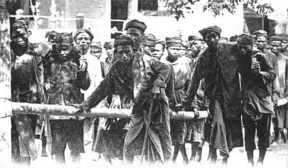
図３ ジャワの刑務所における歩行困難な脚気患者。フォルデルマンの観察（38）。
ニュージーランド往復の練習艦の状態はとくに惨憺たるものであった。半分以上が脚気となり25人が死亡した。（＊：日数が272日、乗り組員数は376人）高木は米を減らし、肉、練乳、パン、野菜を増やしてタンパク質の割合を高めた食事にして、航海を繰り返すように上層部に進言した。今回は死者は無く、脚気患者は上記の完全な食事を摂取しようとしなかった14人だけであった。高木は、この病気がタンパク質欠乏によって起きることを確認したと信じた。事実、全艦隊で食事を変えてから、海軍では脚気の問題は完全に無くなった。
同じ頃、オランダの東インド植民地（現在のインドネシア）で、蜂起鎮圧のために送る現地採用の軍で、同じような脚気の問題が起きた。コッホその他による種々の病気の原因となる微生物同定の成功に鑑みて、オランダ政府は細菌学の訓練を受けたペーケルハーリング教授が率いる小チームを派遣して８月にわたり脚気の研究をさせた。かれはこのときには高木の研究を知らなかった。
解剖の結果は神経変性を示していた。基地病院の脚気患者の血液に細菌は見つからなかったが、戦争が行われているアトイェにいる病気の兵士にも健康な兵士にも細菌が見つかった。興味あることにはそこに駐屯している兵士たちはほんの60日もするとこの病気にかかることが判った。また脚気患者の血液をイヌに注射しても変化は起きないが、一部のイヌは６週間以上にわたって20回ほどの注射を受けると病気になり、神経変性を起こすことが示された（32）。
ペーケルハーリングは最終報告にこの病気は特別な種類の細菌感染であり、このことを示すにはもっと研究する必要がある、と記した。彼はこの研究を進めるのに、彼の助手を勤めていた若い軍医エイクマンを推薦し、エイクマンはこの植民地に長期駐在することになった。彼はしたがって軍務から解放され、バタビア（＊：現在のジャカルタ）郊外にある多数の脚気患者が入院している軍病院で、文民コントロールのもとで少人数の研究チームに責任を持って研究をするようになった。
個々の動物に違いが多いことおよび多数の動物が必要なことから、エイクマンはニワトリを使うことにした。ニワトリは入手しやすく、買うにも飼うにも金がかからなかったからである。ほ乳動物ではないので実験モデルとして驚くべき選択であったが、それは運が良いことが後で判った。彼はまずニワトリに入院患者の血液を注射して感染させることを試みた。数月後にニワトリは脚気患者と同じようによろよろと歩くようになった。しかし、同じニワトリ小屋に飼っていた注射しないコントロールでも同じようなことが見られた。もちろん、これはニワトリからニワトリへの伝染と考えることができた。ニワトリを解剖すると変性した神経が観察され、人間の脚気に相当する状態を起こすことに成功したことは彼を勇気づけた。したがって彼はコントロールのニワトリを注射したニワトリから離して、さらに実験を始めたが、今回はどのニワトリでも成功することができなかった（33）。
我々は誰でもこの時点で、着実な結果を与えてくれないニワトリを使うことは止めるであろう。しかし、エイクマンは何か理由があるに違いないと考えた。ついに、ニワトリを飼っていた現地使用人が、ニワトリのよろよろと歩くようになった時期には、数月にわたって病院の調理場から食べ残しの調理した食事を貰ってニワトリを飼っていた、ことが判った。しかし、新しい調理人が採用され、民間のニワトリに軍の米を与えられないことになった（34）。
エイクマンは食べ残しのご飯を使って、３-８週間でニワトリに下肢の障害が起きることを見出した。しかし、未調理の病院の米またはニワトリ飼育用の米では３月しても健康であった。彼は米の精白法を調べ、病院で使う“白米”は前もって殻を取っておいた後で、ぬか（訳注：bran のうち内層の胚芽の部分を polishings と呼んで区別することもある。しかし、ふつう同義に使うので両者ともに“ぬか”と訳した）を除くために“磨く”ことを知った。それにたいして、村に住んでいる人々は毎日米を搗いて殻だけを除き、“ぬか”がついたままの“玄米”を食べていた。玄米は新鮮な状態で利用すると問題は無いが、食べ物を運送し長いあいだ貯蔵する軍隊に補給するには、玄米は不適であった。何故かというと熱帯では腐敗し、食べられなくなるからである。
彼は解剖結果で末梢神経損傷の観察に基づいて、ニワトリの病気を一種の末梢多発性神経炎であると考えた。文献を読んで、この神経炎は人間では、ある種の中毒によるものであり、たぶん間接的に細菌の作る毒素のみによることを、学んだ。したがって彼の最初の考えは“調理した病院のご飯では、未知の微生物が腸管で増え、したがって神経の変性を起こす毒素を作る、のに適当である”と。ニワトリの病気が人間の脚気と違う点は、ニワトリは全体的に体重減少が見られ、玄米の量を減らして体重を減少させても、下肢が弱らないことであった。
エイクマンは長期にわたる飼育実験を始めた。しかしマラリアの発作のために中断されて、中間報告を行ったのは６年後であった。第一の発見は、調理したものより長い期間がかかるが、未調理の白米でもニワトリに病気を起こしたことである。したがって、一晩で調理した米に増殖した病原性の微生物によって病気が起きるという最初の考えは捨てなければならなかった。続いて彼は食事を玄米に換えることによって病気のニワトリを治癒できることを発見した。したがって彼は玄米に存在するぬかのどの因子に予防効果があるかに興味を持った。彼はぬかの中の繊維成分ではないかと思ってすり潰したが、効果は同じであった。殻をすり潰して繊維の代わりとすると効果は無かった。
彼は同時に行った実験でニワトリをサゴまたはタピオカのデンプンで飼うと体重が減少し、特徴的な下肢のよろめきが見られ、これらの症状は米に限らないことが判った。次に彼はニワトリに毎日500gのタピオカと25gの生肉を与えて、タンパク質が玄米食と同じ量になるようにした。ニワトリの体重は増加したが4週間すると普通のように下肢がよろよろとしだした。これはニワトリの多発性神経炎は必ずしも羸痩（るいそう）と同時に起きるのでないことに、エイクマンは注目した。ニワトリを肉だけの餌にすると徐々に回復し、最初から肉だけで飼ったニワトリは健康であった。脚気を起こす餌に共通な因子はデンプンであり、デンプンは腸管内で毒素生産性の微生物によって発酵し、玄米を取り囲んでいるぬかは解毒剤の役割をしていると、彼は結論した（35）。
彼の研究についてのこの記載すら多くの実験を省略している。その中には決定的な結果が得られなかった他の種類の動物を使った実験がある。彼がオランダに帰った後で行った講演で次のように述べたのは不思議ではない；“単純ということは真理の特徴ではない”と（36）。この男は同情されなければならない。彼の妻はインドネシアへの最初の旅行で死亡した。彼自身もマラリアの発作で苦しんでいて、これを最後に熱帯を去らなければならなかった。また、ニワトリの病気および彼がつまずいた新しい現象は、実際、脚気と何の関係があるのか、他の人たちが疑いを持っていることを彼は知っていた。事実、ある批評家は彼の報告を読んで“科学研究所の所長が書いた文献として最も不適当な結論とみなさなければならない”と書いた（37）。
1896年にオランダに帰った後で、一つの報告が彼を慰めたに違いない。バタビアを離れる前に彼はジャワの刑務所の検査官であるフォルデルマンと自分の研究について話した。彼らの間で次のことに気がついた。すなわち、すでに異なる刑務所で異なる種類の米を使って自然の実験が行われているのではないか、と。驚くべきことには、ほぼギリシャの大きさの島に、101の刑務所があり25万人の囚人が居た。フォルデルマンは詳細な調査を行い、実際、（図４が示すように）白米を主として使っている刑務所には非常に多数の脚気患者が居ることを見出した（38,39）。“玄米”刑務所では１万人の囚人のうちで1人しか脚気に罹っていなかったが、主として白米を使っている刑務所では39人に１人が罹っていた。大部分の囚人の刑期は短かったが、白米を食べていた長刑期の囚人は４人に１人が脚気に罹っていた。この病気の原因となり得ると考えられていた条件、たとえば過密状態とか換気不良、については悪条件の証拠が得られなかった。したがって、この報告はエイクマンの研究が人間の脚気に関係あることを強く示したものであった。
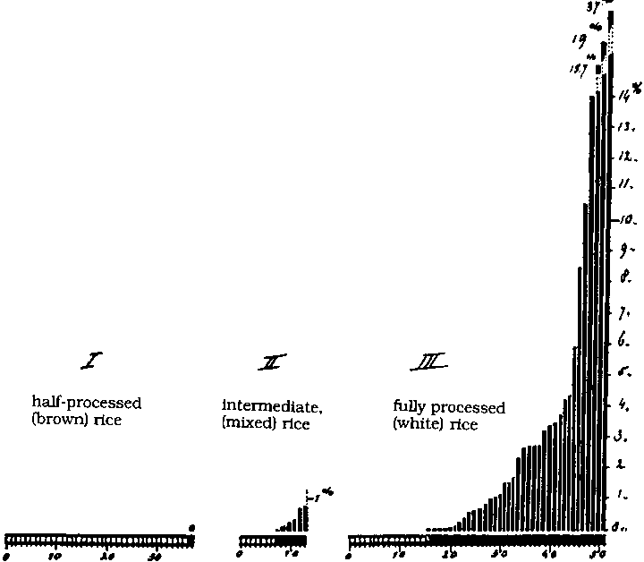
図４ 使用した米と脚気の罹患率。ジャワ刑務所における研究。I 半分精白、II 混合、III 完全精白。フォルデルマン（38）
バタビアにおけるエイクマンの後任はフレインス（＊：オランダ語の発音にしたがった。日本ではグリインスとしていることが多い。）であった。彼のバックグラウンドは前任者とほぼ同じであった。彼の最初の研究は米ぬかを分画して、含まれている活性物質の性質を見つけることであった。彼の分画方法は活性を失わせたので、最初彼は失望した。続いて、このことはニワトリのこの病気はデンプンの存在に依存するというエイクマンの考えを検討する良い機会であることに、彼は気がついた。彼は肉をオートクレーブにかけて、８匹のニワトリをこれだけで飼ったところ、１匹を除いてすべて特徴ある麻痺状態を示し、すべて死亡した。したがって、たぶん毒素を生産する発酵を通して、この病気にデンプンが関係することは、否定された。フレインスはまた数種のマメがニワトリの白米食のサプレメントとして米ぬか以上に有効であることを示した。彼は1901年の論文を次の歴史的な文章で終わっている：“自然の食品にはある種の物質が存在し、それが欠けると末しょう神経にひどい障害が起きる。これらの物質は異なる食品中にきわめて不平等に分布している。‥‥これらの物質は容易に分解するので、分離は容易でない。‥‥これらを単純な化合物で置き換えることはできない。”と（40）
フレインスもまた他の熱帯病から回復するために1902年に２年間オランダに帰らなければならなかった。しかし彼の研究はすぐに他の人たちによって続けられた。ポルはインドネシアのある精神病院の医師であり、ここでも脚気の深刻な問題があった。彼はフレインスのマメについての研究を聞いて、患者について試みることを決心した。まず、すでに脚気に罹っている男たちは別の病棟に移させ、最初は健康な患者を対象として６つの建物に住まわせた。３つの建物の患者をコントロール・グループとして標準的な給食を行ったところ、次の９月の間にどの建物でも脚気患者が出た。脚気患者は全員58人のうち19人であった。ランダムに選んだ残りの3つの建物の患者には標準給食の他に150gの緑豆を与えたところ、78人全員のうちで誰も脚気に罹らなかった。標準給食を摂取して脚気に罹った人たちも同じように緑豆を与えると治癒した（41）。この結果は小動物で行った研究が人間の病気の治癒と予防に関係することを示す更に一つの確証であった。
1905年までにインドネシアにおけるオランダの研究者たちは、白米には熱に不安定な未知のある物質が欠けていることによって、脚気が起きることをかなり説得力をもって示していた。しかし、脚気が蔓延しているアジアの他の国でまだ受け入れられなかった。1904〜1905年の日露戦争のときに満州（中国の東北一帯）に出征した多くの日本兵士（９万から20万人）は脚気にかかり、臨時病院に戻されて感染症として治療された（42）。
マレーシアでも脚気は根深い問題であった。イギリス植民地の医官であったブラドンは最新のオランダの研究を知らなかったが、白米は悪者であると確信していた。しかし彼は米を“精白”すると表面が多孔質となり精白機械に貯まっていた病原性のカビを受け取り、さらに貯蔵している間にカビは白米中で増殖すると考え、これが脚気の原因であると信じた（43）。
マレーシア医学研究所の研究員たちはオランダの研究を学び、ニワトリを使って独自の研究を始めた。彼らは白米の餌に玄米のアルコール抽出物を与えると多発性神経炎の発現を抑えるが、アルコール抽出をした玄米で飼うと脚気が起きることを見出した（44）。これらの研究は白米が有毒なのではなく、何かが不足しているとすることによってのみ、説明することができる。
1898年のスペイン・アメリカ戦争の後にアメリカはフィリピンを占領して、現地人軍の間における脚気の問題に直面したので、当局は1910年にこの問題を討議するための国際会議を提案した。この会議には日本、ジャワ、マレーシア、タイ、スリランカおよび現在ベトナムと呼ばれている地域からフランス代表が出席した。この病気は白米を主食とする人々に限定されていることに意見は一致し、アメリカ代表は“公衆栄養”的な方法をとって、白米製造を禁止するか、白米に不足するものを補充できる種々の食事を食べることのできる人たちだけが買えるように税を高くすることを、提唱した。しかし他の代表たちは玄米は熱帯では腐敗するので、この方法は実際的ではないと考えた（45）。
日本では数年前から母乳哺育児で“タオン”と呼ばれる病気のあることが知られていた。この病気は嘔吐、浮腫、尿分泌停止が特徴であった。死亡率はきわめて高く、母乳が有毒なように思われた。牛乳を与えると治癒するからである。フィリッピンの米陸軍軍医団に勤めていた医師たちも同様な観察をした。彼らは母乳哺育児に米ぬかのアルコール抽出・蒸発物を与えると治癒することを見出した（46）。
この時までにジャワやその他の地域の研究者は、米ぬかから活性因子を濃縮し単離し、長期計画として構造を決定し最終的には合成することを夢見ていた。飼うのが容易なハトは、抗脚気因子が不足すると特徴ある頭の後退反応（レトラクツィオン）を示す事が、ドイツで見つかった（図５）。今や準備の整った西洋の実験室でこの問題を取り扱うことが、脚気の存在する国々と同じように容易になった。たとえば、米ぬかはリン酸の濃度が高いので、ドイツの研究者たちは、フィチン、核酸その他のリン酸化合物の効果を調べた。これらは活性が無かったが、乾燥酵母は効果が強かった（47）

図５ ２-３週間白米で飼ったハトは典型的な頭部の後退（上図）。同じハトに酵母抽出物を与えた3時間後（下図）。（65）
1911年にポーランドの化学者でロンドンのリスター研究所で研究していたフンクは米ぬかから活性ある結晶を初めて得たと主張した。この物質は有機塩基を含んでいて、50mgで欠乏症ハトを治癒させることができた（48）。次の年に日本の研究者たちはもっと強力な物質を得た（49）。これらは後になって混合物であることが判り、その後多年にわたって激しい精製競争が行われた。
小児のくる病は、骨の不十分な石灰化、歩行による下肢の湾曲、肋骨の変形、を特徴とし、この時期の西ヨーロッパおよびアメリカの大都市で、ますます一般的な問題となった。カルシウム塩の不十分な摂取は直接の原因ではなかった。何故かというとこれらの場所の水には他と同じように高濃度の“石灰”が含まれていたからである。これは金持ち家庭のふっくらとした栄養の良い子供たちにも見られた。チードル（Walter Cheadle）がこの問題についての総説に記しているように、共通の因子は、この子供たちが母乳ではなく、脱脂乳、または母乳よりも炭水化物が多く脂肪が少ない、新しく特許が得られた“人工食”を与えられていたことであった。彼はまたロンドン動物園の問題にも言及して、ライオンの子供たちは母親ライオンに無視されていて、ウマ肉にタラ肝油と挽いた骨を与えないと、くる病で死ぬ、と述べた（50）。
日本駐在の医師で宣教師であったパームは、くる病がここには全くないのに驚いた。彼は仲間の宣教師たちによる全世界でのこの病気の分布調査を組織し、充分の日照時間があり、工場の煙で邪魔されていない地域では、この病気は存在しない、という結論に達した（51）。これらの2人の著者の研究をまとめると、この病気は次の2つの条件があると起きることが示された。すなわち、日光が不十分であり、子供に母乳の代用品として不適なものが与えられている、ことであった。次の時代になると、これらの考えは動物モデルによって検証されたが、この病気はどのようにして予防できるか示す充分な事実が与えられていた。
1885年までにロンドンの小児科医バロウは、くる病の小児において成人壊血病を思わせるような別の問題のあることを観察していた（52）。死体解剖で四肢の長管骨の端に出血が見られ、肋骨は結合している軟骨から分離していた（52）。これらはリンドその他が観察した成人壊血病の特徴であり、くる病の症状ではなかった。フランスとドイツでもこの症状はしばしば観察され、“バロウ病”と呼ばれるようになった。
これはアメリカでもますます見られるようになり、1897年までに50以上の論文が刊行された。次の年にアメリカ小児学会は哺育方法の判っている356例について調査を行った。これらのうちで12例のみが母乳哺育で、大部分は殺菌牛乳または“コンデンス・ミルク”、または特許粉末を水に溶かしたものを与えていた。また、小児にオレンジジュースと未殺菌牛乳、または未殺菌牛乳だけを与えても治癒することが判った（53）。
この時まで若い子供たちの主な死因は“夏下痢”であった。これは大都市に運ばれてきたミルクのひどい細菌感染によると考えられていた。したがって多くの市は若い子供たちに殺菌ミルクを与える積極的なプログラムを持ち、成功していた。したがって小児科医たちは他の点では優れている殺菌ミルクを悪者にするのは気が進まなかった。
この問題はパリでもベルリンでも討議された。一つの考えは、加熱によってある種のミルク・タンパク質に変化がおきて消化され難くなり、不消化残渣は大腸で腐敗して自家中毒を起こす、ことであった。これはもちろんニワトリに米でんぷんが脚気を起こすことについてのエイクマンの解釈に似たものであった。殺菌ミルクを与え続けてもジャガイモ粥またはオレンジジュースを追加するとこの症状は治癒するのでこの考えは支持されなかった。脚気の場合のように動物モデルは得られなかった。
この時期に北極探検のあるグループでは毎日１オンスのライムジュースを摂っていても壊血病になり、ある探検で陸に取り残渣れた人々はライムジュースが無くても生または軽く調理した肉と血液を摂っていて健康を保っていた（54）。成功したある探検隊のリーダーであったジャックソンは次のような結論を下した。“ライムジュースの使用は壊血病の予防にも治療にもならない‥‥壊血病は腐った食品を食べることによって起きる。‥‥細菌が病気の原因であることをパスツールが警告して以来、壊血病の科学的な研究はなされていない”と。彼はそれまでの探検で使われていた塩蔵肉の代わりに使われるようになった缶詰肉に特に注目した。彼は缶詰にする前に肉は腐敗し、増殖した細菌はプトマイン（＊:死体毒）となり、オートクレーブして細菌が死んでも毒は残る、と考えた。彼は新鮮な獲物で生き抜いた自分の経験や、流通拠点で壊血病が起きたときにハドソン湾会社は優秀な狩猟家を送って従業員の食事に新鮮な肉を供給した例を、引用した（55）。
ジャクソンはロンドンに帰るとロンドン大学の生理化学の教授の協力を受けて、新しく開けた缶詰肉と開けて数日たって酸っぱくなった肉でサルを飼った。不幸なことにサルは輸入したばかりで環境に適応していなかった。すべては下痢をおこし８週間以内に死んだ。実験者たちは、酸っぱい肉を食べた８匹のうちの５匹の歯肉はぶよぶよになったが、新しく開けた缶の肉を食べたサルではそのようなことはなかった、と信じていた（56）。彼らの研究はロンドンの英国学士院で名声高い聴衆の前で発表され、かなりの影響力を示すようになった。
次のイギリスの南極探検ではプトマイン中毒にたいしての準備がなされた。1901年の出発にさいして主任外科医は、“いわゆる抗壊血病食品の効果とは幻想に過ぎない‥‥。細菌が中でプトマインを作ると動物性食品は壊血病を引き起こすようになる、‥‥そうでなければ壊血病は起きない”と言った（57）。その外科医が検査して承認した缶詰肉を主として摂った冬に続いて、橇探検が行われ、数週間後で壊血病が重大な問題となった。今や規則は逆になった：食事にさいしてライムジュースはテーブルに置かれ、新鮮な肉を得るためにアザラシは殺され、外科医は芥子とクレスを育て始めた。徐々に隊員の健康は元に戻った（58）。
1902年にノルウェーの細菌学・衛生学教授のホルストは脚気と診断されているノルウェー船の乗り組み員たちの病状と関連して、バタビアのフレインスを訪ね、彼の多発性神経炎・ニワトリの研究を見る機会を得た。オスロに戻って、ホルストは“航海脚気”により近いモデルとして、ほ乳類のモルモットを選んだ。彼は全粒または製粉した穀類で飼ったところ、すべて30日以内に死亡した。死体を解剖すると、“極度の内出血”が起き、臼歯がぐらぐらしていた。小児壊血病診療の経験があるフレーリッヒは、この状態は多発性神経炎のどのような種類でもなく、壊血病であることを確認した。彼ら２人はこの条件は半飢餓によるものではなく、これまで抗壊血病の効果があると言われてきたレモンジュースと新鮮なキャベツを与えると予防効果のあることを見出した（59）。さらに彼らは、牛乳を消毒するためにオートクレーブ処理をすると、抗壊血病の効果の大部分が失われることも確認した。
これは重要な研究であり、脚気にたいするニワトリの多発性神経炎と同じように壊血病にたいする動物モデルを提供したものであり、この病気は何らかの中毒によるものではなく、ある種の欠乏病であることの追加的な事実を与えた。
この時期においてこの病状に関して刊行された最も重要な仕事は森正道によるもので、この地域で“脾疳”と呼ばれていた病気1500例についての研究であった。彼はこれが西洋における夜盲症や眼球乾燥症と同じであるとし、彼の患者にも西洋の例と同じように角膜軟化症から失明に進行する例が見られた。彼は離乳期の子供たちの食事に脂肪が不足しているとした。この病気にはタラ肝油がもっとも効果があり、オリーブ油は無効であり、ヤツメウナギ油はそれらの中間であった。彼は３種のうちでタラ肝油が最も良く吸収されると考えた。彼は動物のミルクが保護効果はあるが、この病気の症候を示す母親から母乳で育てられた赤ん坊はこの病気になるとした（60）。夜盲症の治療で動物の肝臓やタラ肝油が有効なことは知られているにもかかわらず、教科書では推奨されていなかった（61）
この時期にはこの病気について何も進歩が無かった。1895年に指導的なドイツ外科医は患者たちに動物の甲状腺を与えて良い結果を得たと報告し、患者たちの甲状腺が異常肥大を起こすのは、甲状腺分泌が少なすぎることにたいする身体の反応であろうと考えた。しかし、この治療法は好まれなくなった。それは大量に与えすぎて、不愉快な副作用があったからであろう（62）。この問題の真の本質が解明されるにはさらに20年が必要であった。
ミルクの脂肪を手軽に測定する装置を開発したことで有名なバブコックは、食品や飼料の栄養評価に近似分析（窒素、エーテル抽出、粗繊維、水分、灰分）を使用することに、疑いを持っていた。バブコックはアトウォーターに近似分析を信じているかと尋ね、もしもそうならウシの糞は近似分析では優れているので、ウシの餌に使うと良いだろうと言って、彼を悩ましていた。ウィスコンシン大学を退職したとき後任の農芸化学教授のハートに、単一の穀類の餌だけで飼った牝牛と混合穀物の餌で飼った牝牛を比べるように申し入れた。
ハートはこれに同意して、共同研究者と一緒に、生後６月の16頭の牝牛を飼育した。トウモロコシ、燕麦、小麦だけからなる３種類の餌を作り、穀粉、グルテンと麦ワラを適当に混ぜてエネルギー値と近似分析値を同じようにした。第４の餌は上記３種類の餌を混ぜたものであった。試験は1906年に始まり、２繁殖期のあいだ続いた。結果を表３に示す。小麦だけからなる餌を与えられた牝牛は状態が急速に悪化して、子牛は１頭も生存できず、母牝牛の２頭も試験終了前に死亡した。これにたいしてトウモロコシを与えた牝牛は状態を良く保ち健康であり、他の餌を与えたものの結果は両者の中間であった（63,64）。これは試験場にとって金がかかる実験であり、最終実験の後で著者たちは“我々の結果について適当な説明はできない”と書いた。しかし長い目で見るとこの研究は高度に生産的であったことがわかった。ウィスコンシン大学を国際的な栄養科学の指導的なセンターにするための出発点になったからである。
“単一穀類研究”にハートが採用したのは若い化学者マッカラムであった。彼は以前イェールでメンデルと研究をしていた。試験終了後にハートは小麦食は何が悪いか（または何が不足するか）を見つけるようマッカラムに命じた。しかし彼はウシが食べる餌の量はあまりにも多いので質をコントロールするのは不可能であり、ライフサイクルが短いので小動物を使うべきであると考えた。彼は学部長の反対を無視して、ラットを使った実験を始めた。これは次章で述べるすばらしい大河小説の始まりとなった。
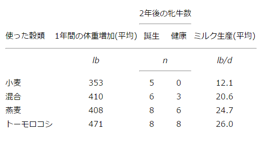
表３ 若牝牛４匹をグループとして単一穀類を与えたウィスコンシンにおける実験の総括（63,64）
20世紀の初頭に栄養学の研究者数は著しく増加した。どの領域で文献が増えたか記載する場所は無いし、同じ問題を研究した幾つかのグループに完全な名誉を与えられないことは残念である。また英語以外の言語だけで発表したグループに公正な評価を与えることはたぶん出来なかった。研究の発展を一連の論文で発表していたときには、比較的に最近のものを引用するようにした。読者にとっては、新しい論文から古い論文に戻るのが、古い論文より新しい論文に進むよりは、容易だからである
米ぬかから抽出され沈殿されるという要件からすると、抗脚気因子は有機塩基であり、アミン基を持つに違いないと、1912年にフンクは書いた。ペラグラ、壊血病、くる病はまだ同定されていない他の因子の欠乏によることを彼は示唆したが、このことは独創的な考えではなかった。彼はさらに進んでこれらの因子はすべて同じ塩基性を持っている、すなわち生命に必要（vital）なアミンであるとし、“ビタミン（vitamines）”と命名した（3）。タンパク質の構成成分が性質は違うがすべてアミノ酸であるのと同じように、これらの物質は化学的に似ているに違いないと彼は直感的に感じたと思われる。これは妄信であって正しい予言ではなかったが、約10年後に彼は「この名前はこの考えの普及に計り知れないほどの貢献をした」と主張するようになった（4）。その意見に同意した他のグループは“この名前は天才の一撃だった‥‥このような魅惑的な言葉は‥‥この領域の可能性に焦点を当てるのに必要である”と書いた（5）。
たしかに“ビタミン”（vitamins: すべてがアミンで無いことが判ったので末尾の 'e' は取り去られた）は掘り出されるのを待っていた知識の新しい鉱脈であり、その後30年のあいだ栄養研究の主なトピックとなった。たとえば The Journal of Nutrition の最初の２巻（1928-1930年）を見ると、ビタミンに関係する論文は他のどの領域より多い（約40％）ことが判る。1933年に前年におけるこの領域の研究を展望することになったハリス（Leslie Harris）は、丁度12ケ月に1,000近くのビタミンについての論文が刊行され、300以上がビタミンＤだけに関するものであったことを指摘している（6）。
“誰がビタミンについての最初のアイディアを持ったか？”としばしば尋ねられる。初期のじれったいような引用を見つけることができるかも知れない。しかし、それらにはその後の発展が無かった。1804年にスリランカで医師クリスティ（Thomas Christie）は書いた。“脚気の主な原因は間違いなく刺激的な栄養になる食事が無いことである。‥‥壊血病に大きな価値がある“酸っぱい果物”は脚気には効果が無い。‥‥違いは細かい化学的組み合わせにあるのであろう”（7,8）。1830年にエリオトソン（John Elliotson）はロンドンの教育病院で講演を行った。“壊血病は純粋に化学病である。‥‥システムの各々の部分はその機能を果たすようになっている、しかしそうするために必要な外のものが取り去られている。‥‥この状態に役立つのは新鮮な食物である”（9）。1842年にバッドはやはりロンドンで講演をして付け加えている。“壊血病は特定的な食事の欠乏によるかなりの数の病気の一つに過ぎない。他のものは、くる病であり、3番目は角膜の奇妙な潰瘍を起こすのが特徴である”（10,11）。すでに "A Short History of Nutritional Science: Part 2 （1885-1912）,"（2）に引用したフレインスの言葉は、ほんの少量だけを必要とする有機栄養素の存在について、自分自身の仕事に基礎を置く、たぶん最初のはっきりとした発言だった。
以前、大部分の研究は特定の病気と実際に関係あると考えられた食事の問題から出発した。このような研究は後でも述べるように重要な結果を与えてきた。しかし、この頃からの生産的な研究の多くは基礎から出発していた。言い換えると、“純化した”食餌、すなわち出来るだけ純化した主要栄養素（タンパク質、炭水化物、脂肪）とミネラルからなる食餌を使用するようになった。これらの食事は問題となるすべてのビタミンを欠いている筈で、研究はどのようなサプレメントの組み合わせが能力を回復させ得るかを見出すことである。マッカラムは説明した。“自然食品の組み合わせで行うこれまでに研究は、栄養の基本法則を明らかにすることや‥‥科学的法則に基づいて飼育体系に基礎を置くのに、本質的に充分な探索を行っていない”、と（12）。
まず最初にこの領域における進歩を、ウィスコンシン大学付属ウィスコンシン農業試験所におけるマッカラムとボランティア助手のデービス（Marguerite Davies）の研究を通じて眺めることにしよう；彼らは初期において明らかに集団をリードしていた（13）。“栄養科学は既に研究され尽くしていて、発見することは何も残っていない！”から、その研究のための職をマッカラムが受諾するとは愚かであると、イェールにおける彼の若い同僚が言ったのは、彼らの発見の重要性から考えると、興味深い（14）。前に述べたように（2）、彼は劇的だが説明できない結果となっていたウシの単一穀物による飼育実験のためにイェールから引き抜かれていた。
マッカラムはすでにドイツ語をマスターし、1870から1907年に刊行された研究を記載した37冊のMalyの“動物化学進歩の年報”を購入し、注意深く読み始めていた。彼は純化した食餌で小動物を飼う13の実験がすべて失敗したことを見つけた。影響力のあったフォン・ブンゲ教授（Von Bunge）は元素の鉄およびリンは吸収されるためには有機複合体の一部でなければならないと確信しており、失敗はこれらの複合体が精製にさいして分解したからであって、未知の栄養素が欠けているからでは無いと考えた（15-17）。ともかく、その後に研究は続けられていなかった。
インドネシアの脚気委員会の長としてのペーケルハーリングの業績は前に述べた（2）。彼はまたカゼイン、卵アルブミン、白米粉、ミネラルからなる単純な食餌でマウスが育たないことを発表していた。彼は別な主題の1905年の論文に短い発表を埋め入れ、マウスは乳清（ミルクから脂肪とカゼインを除いたもの）を与えると供給できるあるものが不足していることを明らかにした。この失われた因子を同定できなかったので、これについて言及しない、と彼は付け加えた。事実、彼の研究は20年後に英語に訳されるまで一般に知られず（18）、マッカラムはこのことを知らなかった。不思議なことにケンブリッジ大学生化学教授のホプキンス（Gowland Hopkins）は、次の年に非常によく似たことを言っている。発行の所在がはっきりしない講演の最後に次のように言っていることが見いだされた。“どんな動物も純化したタンパク質、脂肪、炭水化物で生きていくことはできない。必要な無機物質を注意深く与えてもよく成長することはできない。‥‥くる病のような病気、とくに壊血病では遠い以前から食餌性因子について知っている；しかし、我々はこれらの病気に対処することを経験的に知っているとは云え、食餌中の実際の欠点は何も知らない。しかし、それらは私が考えているものの種類‥‥であることは確かである”。しばらく後、ノーベル賞講演で、1906-1907年にマウスで行った研究に基礎を置いていると述べたが、ペーケルハーリングの場合と同じように、失われた因子を彼が同定するまで真面目にとられなかった（19,20）。たぶん純化された食餌をヒトの病的状態と結びつけたのは、彼が最初だったのではないだろうか。
興味あることに、マッカラムは、ニワトリに白米を与えて起きた病気についてのエイクマンとフレインスの重要な研究、およびこれが比較的に不安定な有機化合物の欠乏によるというフレインスの結論についての何の引用文献も見つけていなかった（2）。
1909年に一人のスイスの眼科医はラットに純粋食を与えると眼の障害が起きることを述べた別の研究を読んで、その実験を繰り返して、人間の病気で見るようなタラ肝油で治癒できる眼乾燥症および角膜軟化症を確認した（21,22）。
この頃、動物はリンを核酸の形で与えられることが必要であると推測されていた。マッカラムはリン化合物を有意に含まない植物タンパク質を調製して、このことをテストした。彼は植物タンパク質のエデスチン（麻の実タンパク質）とゼイン（トウモロコシタンパク質）の混合物を12-18%、バター脂肪５%、ミネラル８%、およびデンプンとショ糖に、少量のセルロース微粉末および水を加えて38度で乾燥したものを、３匹のラットに与えた。ラットは最初の体重が100-170gであったが、体重は減少し、１週後には食欲を失った。彼は種々の香味料、たとえばバナナ、ベーコン、などなど。これらは１、２日は食欲を刺激して、上記の餌の制限因子は味であると結論した。しかし、リン出納試験の結果から、有機リンもプリンも無くてもラットは核酸を合成できる、と結論した（16）。コネチカットでオズボーンとメンデルは1911年にこの最後の点を確認した（23）。彼らは他のタンパク質源が無い状態で種々の単離タンパク質の栄養価を比較することに最初は興味を持っていた。しかし、そのためには若いラットに必要なものをすべて含む無タンパク質混合物を必要とした。その結果、彼らは否応なしにビタミン研究の分野に入ることになった。
マッカラムは今やリン含量を気にしないでリンタンパク質カゼインを精製タンパク質源として使うことができるようになり、自分のミネラル混合物を改良する実験を行った。1913年に彼はデービスと一緒に、12-18%のカゼイン、20%のラード、20%の乳糖、６%のミネラル、およびデンプンを含む餌を与えるとラットは８から14週はよく育つが、その後では成長が止まり、ある例では体重が減る、ことを報告した。しかし、一日置きに卵のエーテル抽出物１g与えると、成長は再開した。次の年に彼らは、バター脂肪はラットの成長を刺激するが、オリーブ油や綿実油にその効果が無い、と報告した。彼らはまた、バター脂肪を鹸化してエマルジョンをオリーブ油と振ると、そのオリーブ油はラットの成長を再開させると、報告した。このことは活性因子が非鹸化物で脂溶性であることを示した（24）。脂溶性の物質が必要なことは今度もコネチカットのグループによって確証され、さらにタラ肝油が高い効力を持つことが報告された（25）。
この時までにホプキンスは、アメリカの２グループの餌で成長が可能だったのは、カゼインおよび乳糖が充分に精製されて居らず、水溶性の“成長因子”を含んでいる、と論じた（26,27）。マッカラムたちはこのことを調べて同意し、ラットは脂溶性の“Ａ因子”と水溶性の“Ｂ因子”の両者が必要であり、後者は白米で飼ったニワトリと鳩で研究されてきた抗脚気因子と同一であると、結論した（28）。
これは化学構造が判る前にビタミンをＡ，Ｂのように呼ぶようになった始まりである。彼らは続いて、葉のエーテル抽出物も彼らが試した植物油もそのような活性が無かったにも拘らず、葉は“Ａ因子”活性を持つと報告した。“Ａ因子”の欠乏が重篤な眼炎を起こすことも確認された。これはもちろん前に述べた夜盲症から眼乾燥症に進み、タラ肝油で予防できるという臨床的研究と関連したものである（2）。“Ａ因子”の理解における遅く複雑な進展については、後の部分で述べる。
1917年にマッカラムは新設で研究費も多いジョンス・ホプキンス大学公衆衛生学部に移った。そこで更に他のヒト疾患“くる病”のラット実験モデルを作った。
前に記載したように、西ヨーロッパおよびアメリカ合衆国北部の工業都市では、くる病が重大な問題になっていた（図1）（2）。スコットランドの最大の都市グラスコーではとくに問題であり、ここの医科大学はこの問題に関係する強力なグループを持っていた。彼らはパンまたはオートミールと全乳を与えた子犬は、室内で飼って戸外で散歩させないと、くる病になると1908年に報告した。市のスラム街を調査して、新鮮な空気と運動が不十分なことは“くる病が起きることを決定する重要な因子”であり、子犬を使ってさらに実験を行って、外で走らせるのはミルクの脂肪を摂取するよりももっと重要である、と結論した（30）。
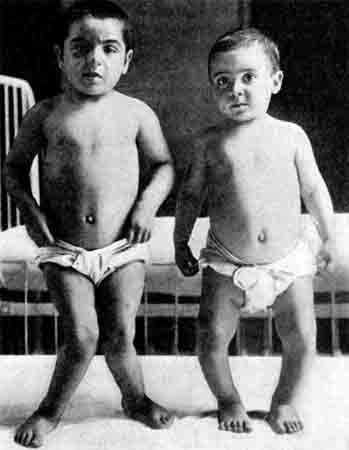
図１ 初期のくる病を示す姉と弟（５歳と３歳） Rachford, 1912 （126）
これにたいしてイギリスのメランビーはホプキンスの下で研究しており、“補助食物因子”の問題をよく知っていたので、室内で飼っていた子犬でミルクを毎日200mL以下にすることによって、くる病を起こさせたと報告した。しかし、彼は犬を外に出したり運動させたりしないでも、バターやタラ肝油をサプレメントとすることによって、くる病を予防することができた（図２）（31）。彼とグラスゴー大学の人たちが相互の結論に疑惑をもったことは理解できる。グラスゴーの学会でメランビーが、オートミールは彼の犬たちにくる病を引き起こしたと報告したのは、彼らにたいして大きな侮辱となった。オートミールは体格が良いと自慢していたハイランダー【スコットランド北部の人たち】の伝統的な穀物だからである。その反応としてスコットランドのある新聞は、犬が嫌いなのでオートミールは役に立たないと頭のおかしい教授が言い、骨を提供したら大喜びしている、漫画を掲載した（32,33）。
討論は間もなく解決された。幼児を日光に当てるのは北ヨーロッパにおける伝統的なくる病の民間治療法であり、1919年には紫外線照射が有効であるという報告がなされた。この頃、第一次世界大戦の余波として、中央ヨーロッパでは激しい食糧不足が起き、フレンド派（訳注：通称クエーカー）の経済援助のもとに、ロンドンのリスター研究所のチック（Harriette Chick）を中心とするグループがウィーンに赴いた。ここには設備の良い小児病院（訳注：院長はアレルギーの研究で有名なピルケー）があり、くる病の患者が多く入院していた。チックたちはX線撮影によって、くる病はもっとも衛生的な条件でも起きるもので、タラ肝油の投与も紫外線照射も共に有効であることを示した（34）。
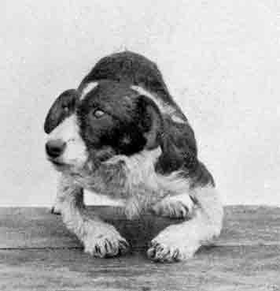
図２ くる病食で室内にて飼われた子犬。Mellanby, 1921 （31）.
この頃までに、ジョンスホプキンスにおけるマッカラムと彼の医師共同研究者たちは、カルシウムとリンの比率を厳しくアンバランスにすることにより、使いやすいラットをくる病モデルにできることを見いだしていた。彼らはまたタラ肝油に空気を通して抗眼病（因子Ａ）価を破壊しても、くる病予防効果があることを見いだした（35）。
次の目覚ましい発見はウィスコンシンにおいて1924年になされた。くる病ラットの紫外線照射は治療効果があるだけでなく、くる病を起こす食餌の紫外線照射も同じ効果を示した（36）。このようにしてどのような因子が活性化されるか多くのグループが研究を行った。これは”脂質”であると突き止められ、続いてステロール分画にたどり、最後にエルゴステロールであることが判った。活性物質は“ビタミンＤ”と名付けられ、1931年に結晶化された（37）。（Ｃは既に抗壊血病ビタミンに使われていた）
この新しい知識によって、くる病は難治性の公衆衛生問題ではなくなった。活性あるビタミンには幾つかの形があり、それらの相対的な活性は問題にしている種によって違うことは、後になって判った。この新しい知識によって、くる病は難病ではなくなった。
驚くべきことには、1907年にモルモットが壊血病の動物モデルになることが発見されて何年も、モルモットはほとんど使われなかった（2）。マッカラムは興味を持った。それは彼のラットは生きるのに抗壊血病物質を必要としなかったからであり、もしも栄養素要求が動物種によって大きく違うならば、彼がラットで得た結果は一般的な意義が問題となるからであった。彼と共同研究者たちはモルモットを“燕麦 ＋ ミルク”で飼った。あるものは生きつづけ、あるものは死に、盲腸は広がって腐敗した糞がつまっていた。彼らはこれを自家中毒症を起こしているとみなした。1917年にこの一つの所見から、彼らは“この説明の意義は重大である：食事欠乏によるとふつう見なされている一つの症候群【壊血病】はリストから除かれる”と書いた（38）。
この歴史で初めて述べる独立した２人の婦人研究者のチック（Harriette Chick）とヒューム（E.M.Hume）は、牛乳は低い抗壊血病活性しか持たないことを、間もなく示すことができた；“燕麦 ＋ ミルク”食餌を与えられたモルモットは健康であるためには毎日50mLが必要で、もしもミルクが酸っぱくなるとモルモットは触れようとしなかった。したがって、結果を説明するには各個体の消費をモニターする必要があった。ビタミンＣ活性が無くなったと思われるオートクレーブしたミルクでは壊血病は必ず起きた（39）。
市販のライムジュースが抗壊血病の効果を持つかどうか疑いを持って、このグループはモルモットを使ってテストを行った。これはビタミン活性の史上最初のバイオアッセイと言うことができるであろう。彼女たちは市販のライムジュースは新しく絞ったレモンジュースの十分の一以下の活性しか持たないことを見いだした（表１）（40）。製造過程で銅パイプを使って汲み上げていることは殆ど確実であり、たぶん何らかの滅菌操作をしていたのであろう。ビクトリア女王時代の人たちが、長い航海でライムジュースが壊血病予防に役立つことを、疑っていたのは正しかった。
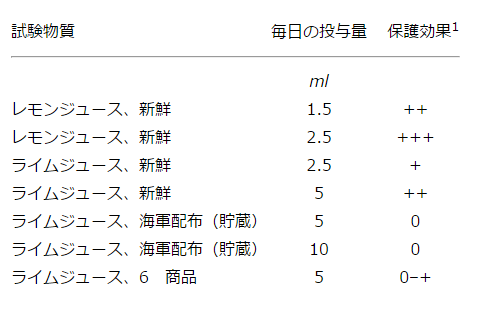
表１ モルモットに壊血病を起こす食餌と種々のレモンジュースまたはライムジュースを与えた結果（38）
他の研究者たちはビタミンＣをレモンから単離しようとしたが、不安定なために困難であった。不思議なことに、ビタミンを求めているのではなくほ乳類代謝における酸化-還元酵素反応触媒の要素を求めていた、セント-ジェルジ（Albert Szent-Gy
 rgi）によって1928年に最初に行われた。彼は屠殺場からの副腎皮質と高速の in vitro 活性測定方法を用いた（41）。ほんの４年後に、他のグループがレモンジュースからこのビタミンを単離して、セント-ジェルジがこれを単離していたことが判った（42）。続いて極めて短い月日で化学者たちは分子構造を決定し、合成し、その生物活性を確認した（43）。ビタミンはもはや懐疑論者たちに“仮定的な存在”と呼ばれるものではなくなった。
rgi）によって1928年に最初に行われた。彼は屠殺場からの副腎皮質と高速の in vitro 活性測定方法を用いた（41）。ほんの４年後に、他のグループがレモンジュースからこのビタミンを単離して、セント-ジェルジがこれを単離していたことが判った（42）。続いて極めて短い月日で化学者たちは分子構造を決定し、合成し、その生物活性を確認した（43）。ビタミンはもはや懐疑論者たちに“仮定的な存在”と呼ばれるものではなくなった。1939年にハーバード大学の一人の外科医はビタミンＣは含まないがすべての他のビタミンをサプレメントした食事を自分に投与する実験を行った。26週間後になり下肢に出血が起き、傷つけた背中の傷が治らず、急速に弱ってきた。アスコルビン酸を投与したら、これらの問題は急速に消失した（44）。
マッカラムたちがビタミンＡ源を含む純粋食によりラットに多発性神経炎の症状を起こさせ、“抗脚気因子”をビタミンＢとしたことは、既に述べた。次に、オートクレーブすると酵母は“抗神経炎”活性を失うが、ラットの成長を促進することが見出された。すなわち第二の因子が含まれている筈である。それ以来、第一、第二の因子をそれぞれB1およびB2と呼ばれるようになった。
B1の単離はジャワのオランダ科学者たちによって行われた。彼らは検定に小さな“白米鳥”を使った。これは洗った白米にタラ肝油をサプレメントして飼ったものであった。約700ポンドの米ぬかから出発して、彼らは100mgの結晶を得た。これは10μgで欠乏ハトを治癒させられるほど強力であった（45）。次の問題は塩酸塩の結晶の構造を決定することであった。これは経験式が C12H18Cl2N4OS であった。構造はついに決定され、生物活性をもつ化合物は1936年に合成された（46,47）。これはチアミン（硫黄【ギリシャ語で thios】を持つビタミン）と名付けられた。
一方では、オクスフォードのピータース（Rudolph Peters）はこのビタミンの機能を研究していた。欠乏患者は運動をすると血液中のピルビン酸または乳酸が異常に高くなることが知られており、彼のグループはチアミン-ピロリン酸がピルビン酸デカルボキシラーゼの補酵素の役割を果たすことを示した。彼はこの欠乏による効果を示すのに“生化学的障害”という言葉を導入した（48）。これはＢ-群ビタミンが一般に種々の代謝に関連する補酵素の一部として役立つことを示す長期にわたる研究の最初の例であった。
ペラグラは日光が当たった部分の皮膚炎、胃腸障害、知能障害を特徴とする病気である（図３）。南部諸州では以前にもあったと思われるが、1905年以来よく見られるようになった。ある精神病院には88人の患者が居て、そのうち55人は死亡した（49）。1909年までにペラグラは南部の多くの地域に広がり、南カロライナ州で第一回全国会議が開かれたときには350人の医師が出席した。この病気の原因として種々の可能性が考えられた。これまでペラグラが問題となっていたイタリーからは、傷ついたり不適当に乾かしたトウモロコシに病原性のカビが生える説が出された（50）。他の説として、ペラグラは主として貧乏な地域で起きるので、蠅は網が不適当な屋外便所に入り、感染性の排出物を台所の食品に運ぶ、と考えられた（51）。
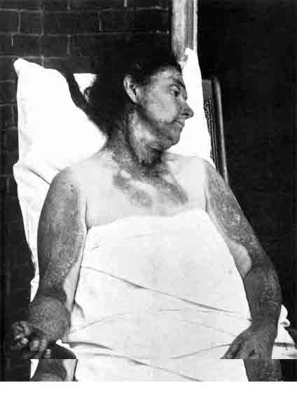
図３ ペラグラ患者。
強い日光に暴露された部分が皮膚炎。 H.F. Harris, 1916 （127）.
強い日光に暴露された部分が皮膚炎。 H.F. Harris, 1916 （127）.
1914年に公衆衛生総局のペラグラ・プログラムの責任者となったゴールドバーガーは系統的な調査を行った。患者の治療をしている看護師や医師たちはこの状態にならないので、彼はこれが感染することは無いと信じて、自分の命を賭ける決心をした。彼は患者の血液を自分の皮下に注射し、患者の皮膚発疹を自分の鼻粘膜に擦り込み、ついには排泄物を食べることまで行った。彼の仲間の医師たちも同じことを行った（52）。公衆衛生総局の役人たちは、国軍の士官たちと同じように危険を冒すのが、伝統であった。この場合、誰も病気に罹らなかった。
ゴールドバーガーはバランスの取れていない食事が問題であると考え、ミシシッピ州当局に頼んで、ボランティアとして12人の囚人に、ペラグラを起こすと思われる食事を６月のあいだ摂らせるようにした。その代わりに、もしも生きているならば釈放されることになっていた。食事はトウモロコシが多く、他の穀物も含んでいたが肉や乳製品は含まれていなかった。５月後に６人は睾丸に皮膚病が起き、数人では手背にも見られた（53）。ゴールドバーガーはこれがペラグラであると満足したが、ボランティアーは釈放されるとすぐに逃げてしまったので、実際にペラグラを起きたか疑っていた医師たちに、彼らを示すことが出来なかった（54）。
南カロライナの線維工場のある村の調査で、ゴールドバーガーのグループは、ペラグラ患者の家庭で買っている食品のパターンが健康な家庭と非常に似ていることを見出した。しかし後者はほとんどすべて牝牛を飼っていて、充分なミルクを得ていた（55）。
彼らは種々の食品や抽出液の抗ペラグラ活性を測定するための動物モデルを探す段階に至った。初期のサルやラットの実験では人間の病気に似た状態を起こすことが出来なかった。マッカラムもまた、ゴールドバーガーが刑務所実験で使ったと同じような食事を与えてラットにペラグラに関係するような症状を起こさせることが出来なかった。マッカラムは刑務所で実際にペラグラを起こさせたか疑問を示し、”ペラグラはたぶん感染性病原体が原因であろう”と結論した（55）。名前が種々のビタミンの発見と結びつけられているマッカラムは、ある時点ではペラグラと壊血病を欠乏症から消そうとしていた。
ゴールドバーガーのグループは動物モデルを探す努力を行った。イヌに主としてコーンミールからなる食餌を与えて肉も粉乳も与えないと、点々と壊死斑のある赤い唇を示し、よだれを垂らし、食欲が無くなる“黒舌病”という病状を呈した。これはペラグラ患者にも有効な酵母に反応することから、ペラグラのモデルとグループは看做した（57）。
酵母や肝臓から得られた分画を検定するのにイヌが使われた。ニコチン酸が細菌増殖因子であることが見つかった後で、ついに1937年ウィスコンシンでニコチン酸とニコチン酸アミドが黒舌病に対し、そしてアラバマ州では、ペラグラ患者に対しても、高い治療効果を持つことが見出された（58,59）。これは既に知られていた化合物がビタミンとなった唯一の例であり、今では口当たりの良い“ナイアシン”の名称が与えられている。これは話の最後ではない。“その四”で続きが述べられる。
間もなく、オートクレーブした酵母の“B2”は、因子の集まりであることが判った。最初に研究され、最初“ビタミンＧ”と呼ばれたのは、乳清中にある緑色の蛍光を示す色素であった（60）。これは単離され、1935年に合成され、リボフラビンと呼ばれた（61）。続いて、“黒舌症”食餌を与えて“黄色肝臓”になって元気が無くなったイヌはリボフラビンによって助けられることが発見された。ナイアシン投与の後で口唇炎（cheilosis）が残っているペラグラ患者がリボフラビンで急速に治癒することも見つかった（62）。ペラグラの症状を示す患者の多くはナイアシンの他にリボフラビンもぎりぎりで不足していた。
このビタミン発見の路はインドに始まった。ウィルス（Lucy Wills）は1928年にイスラム教女性に最もふつうに見られる妊娠時の大赤血球性（macrocytic）貧血を研究するためにインドに赴いた。この状態を感染やビタミンＡやＣに結びつけるのに失敗した後で、彼女は酵母またはその抽出液（商標名：マーマイト）がこの状態を治すのに非常に有効であることを見出した（63）。イギリスに帰って、貧しいボンベイの食事をレーズス（rhesus）サルに与えると、大赤血球性貧血および白血球減少症を起こすことを、1937年に彼女および協同研究者は、発表した。これにマーマイトおよび肝臓粗抽出液は有効であったが、悪性貧血患者に経口的に与えて有効な精製肝臓抽出液は効果が無かった（64）。他の人たちはサルのこの状態に既知のどのビタミンも効果が無いことを確認し、ここで欠乏する因子を”ビタミンＭ（monkeyより）”と名付けた（65）。
同じ頃、家禽の栄養に興味を持つ研究者たちは、既知のビタミンをすべて含む純化した食餌でニワトリを飼うと、成長が遅く大赤血球性貧血を起こすことを見出し、ある種の細菌の生長因子として知られていた結晶化した“ビタミンＢｃ”を加えることによって予防できると1944年に発表した（66）。そして同質、または近縁の物質がホウレン草から得られ、葉酸（folic acid: foliage【葉】より）と名付けられた。これらの物質はサルの実験的貧血にも有効であり、供給が可能になったならインドでも臨床的に有効であろうと期待された（65）。
“ビタミンB2”が種々の因子の組み合わせであることが明らかになると、各因子を決定する競争が始まった。ここでこれらの激しい研究競争を記載することは避けるが、最初に発見されたビタミンを雛ニワトリで、酵母、乳酸菌をラットを使って確認したのと基本的に言って同じであった（68,69）。1937年までにパントテン酸、B6【ピリドキシン（ＰＮ）グループ】およびビオチンが水溶性ビタミン（表２）に加わった。コリンはニワトリに必須であり、ほ乳類でも、ある場合には脂肪動員値のあることが認められた（70）。“B4、B10、B11など他の因子の存在が主張されたが、無視された”（71）。
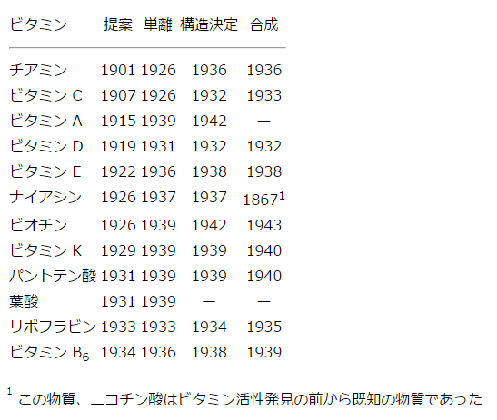
表２ 1944年までのビタミンの発見。Combs, 1992 （128）から許可を得て一部変更
この歴史【その３】の最初の部分で、若いラットの成長を支え、眼球乾燥症を予防する、脂溶性ビタミンである“ビタミンＡ”の概念へと繋がる、初期の研究について述べた。第一次世界大戦のデンマークで脂肪の供給が不足し、小児施設で予期していない実験が行われた。あるグループでは16人のうち８人が眼球乾燥症にかかったが、別のグループでは１人もかからなかった。２つのグループの食事の違いは、第二のグループではそれ以前の６月に全クリームのミルクが与えられていた。責任者の小児科医ブロッホは患者がいるグループにタラ肝油を与えた。彼らの目の問題は８日で無くなり、成長も速くなった（72,73）。明らかにラットで行った研究は臨床と関連していた。
問題はこのビタミンを同定することであった。少なくとも２つの形が考えられた；一つは色が強い型で葉やニンジンに存在し、色の無い型は動物脂肪に存在していた。多価不飽和炭化水素であるβ-カロチンの結晶がニンジンから得られ、活性を持っていた。無色因子の調製は困難であったが、抽出液の活性は三塩化アンチモンとの特有な発色と相関していて、カロチンが示す発色と区別することができた。続いて、ビタミンAを欠乏させたラットにカロチンを与えると、肝臓の抽出液に“動物”因子の発色反応が見られた（74）。このようにカロチンは最終的なビタミンの前駆体であると考えられ、このことは、実際のビタミンが1939年に魚の肝油から遠心分子蒸留装置を使って単離され、構造が決定されたことによって、確認された（75,76）。
合成はとくに困難であった。一人の重要な貢献者は次のように書いている。“多年たった後に勝利が訪れ、大きな希望と苦い失望のロマンスは有機化学教科書の短い数行の文章として記録される”、と（76）。悲しいけれど事実である。このビタミンは現在“レチノール”と呼ばれ、β-イオノン環に結合した交互に不飽和の長い炭素鎖の末端がアルコールになっている。β-カロチンは２つのレチノール分子がアルコールを介して縮合したものである。
バークレーで研究していたエヴァンス（H.M.Evans）とビショップ（Katharine Bishop）は1922年に、成長を支えるビタミン類を含む純化した食事で雌ラットを飼うと、胎児は妊娠末期になる前に吸収され、正常な繁殖ができないことを見つけた（77）。この問題を避けることができた食物はまずレタスであったが、小麦とくに小麦胚芽油は有効であった。予期にはずれてタラ肝油は悪影響があるように見えた。活性因子は“ビタミンＥ”と呼ばれ、多くのグループによって研究が行われ、1935年に単離され、“トコフェロール”と名付けられた。これはギリシャ語で“出産を起こすアルコール”を意味する。３年後にスイスの化学者カラー（Paul Karrer）はフィチル・ブロマイドとトリメチル・ヒドロキノンを縮合して、合成した（78）。彼は幾つかのビタミンの化学の研究でノーベル賞を得た。
この時期にビタミンＥ欠乏効果についての考え方が変化した。ラットでは雄の睾丸に変性が見られた。しかし、妊娠にさいしては胎児の成長に問題があるのであって、母親に問題があるのでないことが明らかになった。また子羊やウサギではビタミンＥ欠乏で不妊よりは筋萎縮が起きた。ニワトリでは滲出性体質または脳軟化症または両者が起きたが、両方の病変は血管系の障害に起因していた（79）。
初期の成功報告によってビタミンEは種々の臨床症状、たとえば流産、性交不能、種々の型の筋萎縮など、の治療に好んで使われた。しかし、よく治験をコントロールすると、大部分は確証することができなかった（80）。
キャベツ投与に反応するニワトリの出血は、一時はビタミンＥ欠乏による可能性が考えられた。デンマークの研究者ダム（Henrik Dam）は1935年に、これは彼が“ビタミンＫ”と名付けた新しい脂溶性ビタミンの欠乏によると報告した（81）。この名前はこれが血液凝固（coagulation、デンマーク語、ドイツ語でKoagulation）で重要な役割をするからである。これは多くの植物に種々の形で存在し、貯蔵した動物製品で細菌が増殖すると作られた（82,83）。閉塞性黄疸でこのビタミンの吸収に障害のある出血性の患者や、抗ビタミン物質を含むスウィートクローバー干し草を食べていた家畜に、このビタミンは治療効果があった（84）。
アルムキストとバークレーの協同研究者はビタミンＫの発見をダムより前に報告する可能性があった。しかし、ニワトリの病気の原因についてのキャンパスにおける議論が解決するまで、刊行を遅らせなければならなかったので、ノーベル賞を受賞できなくなった。この頃まで多くの人たちが栄養学の問題に関与していたので、このようなことは不可避であった。かなり後になって、アルムキストは次のように哲学的に書いた。“しばしば、発見には高度の科学指導‥‥などの集まりによって生まれる。これらには多くの人々が貢献している。‥‥舞台が作られたようなものである。‥‥もしもその舞台に居たら、多くの人々は役割を演ずることができる。”と（85）。
エヴァンスの研究室からミネソタ大学に移動していたバー夫妻（George & mildred Burr）は1929年に、完全に脂肪を含まない食餌を使う実験で苦労していた。彼らは、コーンスターチにはエーテルで抽出できない脂質を0.7%含むので、コーンスターチの代わりにショ糖を使い、タラ肝油の鹸化液から不鹸化分画を分けそれを加えることによってビタミンＡとＤを供給した。このような食餌で数月のあいだ飼ったラットは、正常の成熟体重に達しなかった。また、毛が抜け、尻尾は腫れ上がり鱗で覆われるようになった。彼らは次の年になり、少量のメチル・リノール酸を加えることによってこの状態を防ぐことができたが、バター脂肪にそのような効果は無かった（86）。多価不飽和脂肪酸の機能について、もっと多くのことがその後になり発見された。
この期間の最初に戻る。ラットについての初期の研究は、種々のタンパク質の相対的な栄養学的な価値を研究するのが第一の目的であり、これは無タンパク質乳（脱脂乳を酸性にし、加熱し、濾過したもの）を含んだ餌を使うと可能であった。オズボーンとメンデルは小麦から単離したグリアジンを使うとカセインに比べて成長が遅いことを、既に観察していた（図４）。さらに、トリプトファンとリシンを欠くトウモロコシのタンパク質であるゼインを18%与えると、トリプトファンとリシンを加えない限り、ラットは成長しないことを見出した（87,88）。したがって、ある種のアミノ酸は“必須”であることが示された。すなわち、それらは体内で合成されないので、食餌に含まれなければならなかった。
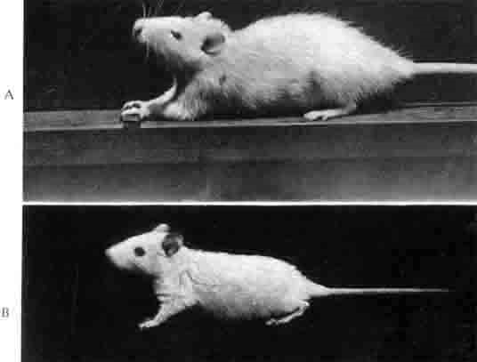
図４ 同腹の２匹の雌ラット。試験食を与えて140日後。（Ａ）唯一のタンパク質として18%カセイン。（Ｂ）小麦のグリアジン、他の食品成分は同一。Osborne & Mendel（23, Plate 1）.
その後の研究で、種々のアミノ酸を欠いているタンパク質を混ぜて使うと互いに補い合うことが示された（89）。しかし、タンパク質の価値は消化され易さとアミノ酸のバランスだけで決まることを証明するのに、かなりの長い時がかかった。
化学的なアミノ酸分析方法には時間がかかり、干渉を受けることが少なくなかった（90）。乳酸菌の複雑な要求性を利用する微生物学的定量方法は1940年代に発展し、数多くの測定をすることができた（91）。これ以来、食品タンパク質の“ケミカルスコア”（化学価）を求めることが可能になった。これは食品に含まれる必須アミノ酸のそれぞれを全卵（暫定標準として）の必須アミノ酸と比較してもっとも低いパーセンテージとして計算したものである。“スコア”は若いラットの体重増加または窒素バランスで求めたそのタンパク質の相対的な価と多くの場合に良く相関した（92）。
メンデルの大学院学生でありチッテンデンの講義にも列席していたローズは1930年にイリノイ大学 Urbana キャンパスで教授であった。彼と協同研究者はラットの成長に適したアミノ酸混合物の開発に取りかかった。彼らは19種の既知アミノ酸混合物を与えたが、動物は成長しなかった。後になって考えてみると、彼らのリストにメチオニンが含まれていなかったのは不思議である。これはある種の細菌の増殖に必要なものとして1920年代にハーバードで見つかっていた（93）。しかし次の10年のあいだ栄養学者にほとんど無視されていた。多分、ラットにタンパク質としてカゼインだけを与えたときにシスチンを加えると成長が速くなるので、シスチンは硫黄を含む必須アミノ酸であると考えられていたのであろう。メチオニンを加えても Urbana ではラットは成長できず、カゼインの酸水解によって得たアミノ酸混合物を加えなければならなかった。
酸水解産物からの活性因子の単離は、これが２つの物質からなると判るまで成功しなかった。さらに注意深く分画することによって、ローズの協同研究者のウォーマックはそのうちの一つがイソロイシンであることを発見した（94）。この当時にはイソロイシンをロイシンから分けて定量することができなかった。最初の混合物に加えられてはいたが、必要量よりかなり低い濃度であった。
第二の因子はこれまで未知のアミノ酸であり、彼らは２-アミノ-３-ヒドロキシ酪酸であると同定し、トレオニンと名付けた（95）。これをアミノ酸混合物に加えるとラットは良く成長し、非常に重要な発見であった。この研究は“非常に高度な化学的能力と手技”をもって遂行され、たとえば分析的によって本質的に純粋であると判っていても“トリプトファンとヒスチジンは５回も再結晶した”と、総説の著者は書いた（96）。
1942年からローズはヒト成人についての研究に取りかかった。これにはもっと大量のアミノ酸の準備、およびボランティアのエネルギー摂取の注意深い調整や窒素出納の測定が必要であった。これらはすべて時間がかかることであり、研究成果は【その四】で述べることにしよう。
こうしている間に、アイソトープが使えるようになり、体内における栄養素の運命および分布が研究できるようになった。1939年にコロンビア大学のシェーンハイマーおよび協同研究者たちは、N15と重水素（側鎖の水素を置換）で二重標識した生理的濃度のl-ロイシンをラットに３日間にわたって与えた実験の結果を報告した。N15の三分の一以下は尿に現れたが、57%は体タンパク質に組み入れられ、そのうちの大部分はリシン以外の他のアミノ酸の中にあった（97）。これはアミノ基転移反応によると考えられた。
この当時、シェーンハイマーは、あるアミノ酸の置き換えにあたって、タンパク質は１度に１つずつのアミノ酸を血流に放出する、と考えていた。ともかく、体タンパク質の合成には、新しく消化されたタンパク質のアミノ酸が使われるよりは、リサイクルされたアミノ酸が使われる、と考えた。彼は次のように書いている。“もしも出発物質が手に入るならば、動物にとって可能なすべての化学反応は絶えず行われる”、および“アミノ酸の合成は脂肪酸の合成と同じように‥‥明らかに必要でなくても進行する”、と（98）。
純化した食事を使った最初の研究者たちは、ミルクや犬ビスケットのように栄養が充分と思われる食品を焼いて、残った灰を与えると、ミネラルの必要量が満足されると考えていた。次にビタミンやアミノ酸の供給の問題が解決されると、個々のミネラルの要求を研究できるようになった。前にも引用したょうに、ビタミンＤや日光が不足する状態でカルシウムまたはリンを大量に与えると、ラットはくる病にかかった。
1929年までの発光分光分析の進歩によって食品中の微量元素が検出できるようになった。牛乳中には大量にあるカルシウム、マグネシウム、カリウム、ナトリウム、リンやこれまで検出されていた鉄、銅、亜鉛、マンガンの他にストロンチウムやヴァナディウムのあることが見つかった（97）。クロールとかヨウ素は他の方法で見つかった。研究者の考えでは大量にある元素が必須であることは疑いがなかったが、“微量元素”が必要であるかどうかの研究が始まった（100）。
純化した食事を使ったラットで銅がヘモグロビン合成に必要なことはウィスコンシンで、発見されていた（101）。続いて1931年に銅の不足はフロリダのある地域に特有な病気の原因であることが見出された（102）。同じ年にマッカラムのグループはマンガンをできるだけ少なくした純化した食事で若いラットを飼った結果を報告した（103）。さらに数年してマンガン欠乏はコーネルで実際の問題となった。すなわち、集中的養鶏で若ニワトリの”ペローシス”（下肢の骨の変形により足腰が立たなくなるニワトリの病気）が見られた（104）。
マグネシウムは動物の骨にも軟組織にも見られたが、ラットで欠乏状態を作るのは困難であった。遂にマッカラムのグループはマグネシウムが食餌1.8μg/gになるまでに精製して、テタニーに特有な症状を示すことに成功した（105）。これにたいして、草で飼ったウシは時にテタニーの症状を示すことがあり、血液中のマガネシウム・レベルは正常なのにマグネシウムを投与すると良くなった（106）。
食餌を高度に精製してラットに亜鉛欠乏を起こさせると、成長は遅くなり毛の抜けることが示された（107）。しかし、この論文で展望している時期には、亜鉛欠乏が実際の問題となった事実は見られなかった。これにたいして、実験動物で実験的に示すことが出来る前に、オーストラリアの一部でウシや羊の罹る重篤な病気がコバルト欠乏によることが1937年に示された（108）。反芻（はんすう）動物におけるコバルトの特別な役割が明らかになったのは、もっと後のことであった。
ヒトの小赤血球性貧血の予防における鉄の重要性は前に述べた（2）。面白いことに鉄欠乏は普通の畜産ではほとんど問題ではなかった。主な原因は家畜は土地で飼われ、土地に鉄が多いことであった。しかし、1920年代になって雌ブタが子を生むために建物内に入れられるようになると、子ブタの死亡率は上昇した。この原因は貧血であることが判り、スコットランドの研究者たちは雌ブタの餌に鉄塩を加えて貧血を予防した（109）。これは雌ブタの乳に鉄が増えるのではなく、子ブタは雌ブタの餌や糞から汚されることによって鉄を得ていることが判り、ウィスコンシンでも確認された（110）。
1937年にロンドンで研究していたマッカンスとウィドウソンは古典的な論文を刊行した。当時の常識とは違って、ヒトは鉄を排泄する能力をほとんど持たない、または全く持たないという説であり、したがって必要に応じて鉄の吸収を調節するメカニズムが無ければならない、と論じた（111）。放射性鉄がバークレーのサイクロトロンによって得られるようになって、このことはイヌを使って確認された。興味あることには、放血で貧血になってすぐに鉄の吸収は増えないで、７日後に赤血球合成が増えた結果として貯蔵鉄が使い尽くされてから、吸収が増えた（112）。
前に述べたように甲状腺腫はヨウ素の欠乏によるという古くからの考えは、1800年代には中毒量の過剰投与によって否定された（1）。しかし甲状腺にヨウ素が濃縮されていること、および腫大した甲状腺のヨウ素濃度は低いことが、次第に判ってきた（113）。最初に見つかった甲状腺ホルモンであるチロキシンは分子内にヨウ素を含むことが見出された（114）。
甲状腺腫の発現率は地区の水や食品におけるヨウ素欠乏と平行しないということは、他の因子も関係している可能性があると考えられるようになった。1928年にジョンス・ホプキンスの研究者たちは、キャベツを主食とし感染症の研究に使っていたウサギが、甲状腺腫にかかっていたことを見出した（115）。詳細な研究は大部分のアブラナ（Brassica）属の植物および未処理の大豆は甲状腺腫を起こす活性を持ち、この活性に高濃度のヨウ化物の反応することが示された。しかし、アブラナ属植物の種子を与えて起きた甲状腺腫にチロキシンは有効であったが、ヨウ素は無効であった。
1917年にマリンは甲状腺腫が風土病となっているオハイオ州のある地区の女子学生に大規模なヨウ素のサプレメンテーションを行った（119）。最初の処理から６月後の再検診の結果を表3に示す。処理期間を長くしても、害作用は出ずに、甲状腺腫に対する治療効果が上がった。これ以後にはヨウ素を含む食塩は世界の多くの部分で政府の支持によって作られるようになった。
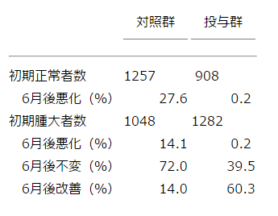
表３ オハイオ州アクロンで女子学生に2.0gのヨウ化ナトリウムを与えて６月後に再検査した結果（119）
1930年代に、採鉱やアルミニウム製造の煙と関係してフッ素を含む灰が散布されるような地域で、家畜の身体が硬直し脚が不自由になり食欲が無くなるような、中毒が見つけ出された（120）。同じ頃、特定の地域の人たちの歯のエナメル質が脆くなることが判った。これはその地域の水道にフッ素濃度の高いことが関係していた（121）。続いて全く逆な現象として、フッ素濃度が低い水の地域で育った子供たちに虫歯の多いことが見つかった。フッ素が少ない水道にフッ素を加えることの承認には反対があり、何年も遅くなることになった（122）。
この時期に多くの研究は、若い動物の成長が最高になるには何が必要かという発見に関係していた。多分これは最高の成長は“良いこと”という仮定が基礎にあったからであろう。しかし、1917年にコネチカットのグループは、雌ラットに食事を制限して成長を遅らせると年をとっても元気な子を多く産むようになることを、報告した（123）。
マッケー（Clive McCay）はメンデルの研究室でポストドックをしていたときにこの報告を知った。メンデルはこのような長期にわたる仕事をするには若い人が必要である、と彼に話した。1927年にマッケーはコーネルで教育職についたときに、この研究をする決心をした。彼と共同研究者は、最初の１年または２年にわたって食事を制限すると、実際にラットとくに雄の寿命が、著しく延びることを確かめた。しかし、“これは“育ちが遅いと長生きする”という昔の理論を支持する、まるで異端の説だ”とコメントした（124,125）。しかし、動物室の暖房が壊れたときに生き抜いたのは痩せた動物だけだった！ と書かざるを得なかった。
この時期において科学知識の進歩と並んで、実際的な応用の進歩があった。ヨウ素を加えた塩の配布は、前に述べたように甲状腺の発現率を著しく低下させた。しかし、困難もあった。たとえば、食品に鉄を強化すると腐敗してビタミンAを分解した。このような技術問題を解決するのは栄養素を発見するのと同じように必要であった。しかし、この問題は本論文の視野の外である。適当な食事中に含まれる個々の栄養素の標準を決める仕事も、また種々の人口グループの栄養状態を評価することも、同様である。
1930年代に栄養学の研究をはじめた人たちは、この時代は栄養素が続々と発見された“栄養学の黄金時代”と振り返るであろう。たしかに我々は彼らの発見におかげを被っている。しかし発見するものを残してくれただろうか？ これは次章でのべることになる。
1945年から1985年までに多数の論文（Nutrition Abstracts and Reviewsに250,000の抄録）が刊行されたので、本論文の最初の部分では新しい栄養素の発見、欠乏の効果、栄養素の有用性に対する他の因子の作用、と直接に関係する論文に限ることにした。これにより栄養要求と直接に関係しないような吸収や機能の生化学的メカニズムは省略した。これは厳しい制限である。何故かと言うと、この時期に多くの興味あるメカニズムが解明されたからである。ビタミンＤの活性化やビタミンＡの視覚サイクルなどがその例である。しかし、スペースの制限から省略した。
発表論文の千のうち一つすらリストに加えることはできなかった。著者がある領域を他の領域よりよく知っているということに（したがって偏見をもって）選択は影響された。研究の大家たちは自分の研究が正しく取り扱われていないと思うかも知れない。このことについて私は謝るより仕方がない。とくに幾つものグループが一つの分野の発展に貢献しているときに私は原著よりも総説を引用することもあった。
1912年から1944年のあいだに多くのことが発見されたので（3）、課題はやり尽くされたと思う人がいても不思議でない。オクスフォード大学は世界第二次大戦のすぐ後にこのような理由で栄養学グループを終了させた。実際はすでに進展しつつあった線上で新しい栄養素の発見と言うような重要な研究がなされた。この問題をまず最初に概観することにしよう。しかし栄養問題への完全に新しい接近方法もあった。これは「豊かな食事の批判」とか「多いのは必ずしも良くない」と言えるもので、成人にとって大きな現実的な重要問題であるとともに新しい研究方針を刺激するものであった。
【その３】に記載したように“葉酸”と呼ばれた物質はサルとトリが大赤血球性貧血になるのを防ぐビタミンであり、ある種の細菌の増殖因子であった。続いてある細菌がこの因子を合成するということが発見され、これによって化学的研究のために大量に調製できるようになった。1946年にアメリカのレダリー研究所のストクスタド等によってN-【（6-プテリジニル）-メチル】-p-アミノ安息香酸に１つまたは幾つかのL-グルタミン酸の結合していることが明らかになった（4）。これは簡単にプテロイル・モノ（またはポリ）・グルタミン酸と呼ばれる。吸収されるとテトラヒドロ葉酸（TH4F）に還元され、またメチル化される（MeTH4F）。ヒトや動物は吸収される前に余計なグルタミン酸を取り除いて、これらすべての形のものを利用することができる。しかし、ある種の微生物はモノグルタミン酸が結合したものを特異的に必要とする（5）。この仕事にはパークデビス会社の活発なグループをはじめとし多くの人々が協力した。
かなり大量に経口または注射によって投与すると、葉酸は悪性貧血患者において赤血球生産を昂進させた。これはしかし悪性貧血患者の治療に用いる肝臓抽出液の活性成分でないことが判った。しかし、このように数月のあいだ葉酸を処方された患者は典型的な神経障害を起こし、この障害は肝臓抽出物で治癒することが1948年までに明らかになった（6）。このパズルには次節で戻る。
一般に若いラットは食餌に葉酸源が無くても健康に育つ。しかし比較的に不溶性なスルフォンアミド薬を食餌に与えると急速に白血球減少症を起こし、この病状は葉酸で治癒した。スルフォンアミドは構造の類似するp-アミノ安息香酸が葉酸分子内に組み入れられるのを阻害する。ラットは食糞によって大腸内細菌が合成した葉酸を得ているが、細菌はこの状態では葉酸を合成することが出来なくなっていた（7）。
類似物質間の拮抗の概念をさらに利用して葉酸類似物質が合成され、そのうち特にメトトレキサート（４-アミノ-10-メチル葉酸）は動物組織内で葉酸の機能に拮抗して腫瘍の急速な成長を阻害しガン化学療法に役立つことが1950年までに見つかった（7）。
葉酸への興味の他の方向は神経管欠損（脊椎披裂）の赤ん坊を産む母親の多くは収入が少ないグループに属するというイギリス連合王国における観察から出発した。明らかに種々の原因が考えられた。最初に示唆され追跡されたのは、大量のジャガイモ消費が危険を高めている可能性であった。もう一つは少数の母親だけが妊娠の前および途中にビタミンをサプリメントしていたことであった。
葉酸欠乏のラット胎児で奇形の見られることから、奇形の胎児を妊娠した母親と健康な赤ん坊を産んだ母親の葉酸の状態を比較する研究が行われた。中枢神経に奇形の子供を産んだ35人の母親のうちで24人は葉酸欠乏と診断され、他の点では似ているが健康な子供がいる同数の母親のうち6人だけがフォルムイミノグルタミン酸（FIGLU）テストで欠乏と診断された。大きな違いであった（9）。奇形の赤ん坊を産んだことのある女性について研究を行った。再発の危険性の高いことが知られていたからである。研究に協力するボランティアの女性には次の妊娠の前に葉酸を含むマルチビタミンを摂取させた。タイミングは重要であった。女性がふつう妊娠したと自覚する受胎の最初の21日以内に神経管の欠損が起きるからである。この試験の結果（表１）は、マルチビタミンを摂取していなかった女性で奇形胎児の割合は摂取していた女性の3.6倍であった。すなわち、4.2%と1.2%の比であった（10）。
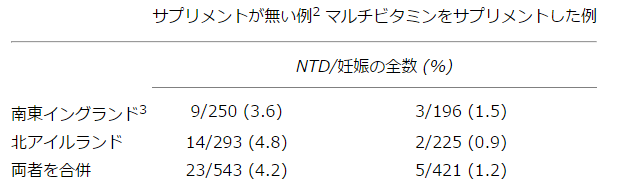
表１ 神経管欠陥（NTD）の再発。以前に新生児または胎児に神経管欠陥があった女性において次の妊娠時にマルチビタミン・サプリメントの有無による再発の比較1。
1 Seller & Nevin （10）より改変
2 これらは真のコントロールではない。ボランティアに知らせないでプラセボを与えるのは非倫理的として禁止されてきた。従って、同じ地域に住み、同じころ妊娠し、再発の危険率が類似していると考えられる女性たちである。
3 イギリス連合王国内で神経管欠陥が前者で最も少なく後者で最も多いので選ばれた。
1 Seller & Nevin （10）より改変
2 これらは真のコントロールではない。ボランティアに知らせないでプラセボを与えるのは非倫理的として禁止されてきた。従って、同じ地域に住み、同じころ妊娠し、再発の危険率が類似していると考えられる女性たちである。
3 イギリス連合王国内で神経管欠陥が前者で最も少なく後者で最も多いので選ばれた。
前に述べたように葉酸は悪性貧血患者に良い効果を持ったが、この病気に使われている高度に濃縮されてきている肝抽出液の活性成分ではないことが判った。以前からこの病気の患者は正常人では胃に分泌されて肉とくに肝臓に存在する“内因子”を活性化する“外因子”を欠くことが知られていた。外因子は患者に注射すると有効であったが経口的に与えるとほんの少ししか活性が無かった（11）。
肝臓抽出液の活性を測定できる動物モデルが得られていなかった。したがって、多くの悪性貧血患者の血液像への反応を測定して、各分画をテストしなければならなかった。しかし、1948年にニューヨーク州のメルク研究所は“肝臓因子”の単離に成功したと発表した。これはある細菌増殖因子の測定方法に助けられた。この因子は肝臓因子と同じものではないかと想像されていて、高い活性の抽出液と同じ色をしていた。彼らはこの結晶を“ビタミンB12”と名付けた。イギリス連合王国の他のグループは数週間遅れて同じような結果に達し、抽出液のピンクの色は活性が高まるにつれて強くなるので、精製の助けになると考えた（13）。結晶の結果はセンセーショナルなものであり、微量金属のコバルトを含んでいた。このビタミンは別名が“コバラミン”となった。きわめて微量でも効力があった。5μgで患者に有効で、使用されていた注射用の肝濃縮液は百万分の一のビタミンしか含んでいなかった。
微生物検定法により、植物はこのビタミンを合成できず、合成できるのは微生物だけであった（14,15）。このことは全く新しいことであった。この時まで、地球上の自然の大計画によると、動物界は、太陽エネルギーを利用して合成を行っている植物界に依存して生きていると、考えられてきた。大計画における微生物の役割は、動物界と植物界の死んだ組織を分解して、植物界の利用に供するとしか知られていなかった。しかしここで初めて、動物は微生物による合成を必要とすることが見出された。
【その３】に記載したように、コバルトをウシは必要とすることが見出されていた。しかし、ふつうの小動物、たとえばラットやニワトリはコバルトを必要としなかった。多くのことが総合されて一つになった。ウシや他の反芻動物ヒツジなどのこぶ胃（噴門洞）に住んでいる微生物はとくに活性が強かった。このことはこれらの動物が無機コバルト塩を利用できることを示した。真の胃や小腸における消化や吸収に先立って発酵が起きて、細菌のコバラミンは宿主動物の組織に運ばれるからであった。
これに対してニワトリでは、大腸における発酵で作られるコバラミンは血流に吸収されない。集中的に飼ったニワトリは植物性食餌だけではずっと飼えないことが知られており、魚粉または乾燥ウシ糞から供給される”動物タンパク質因子”を必要とすることの研究がなされていた。コバラミンを充分に与えられていた雌ニワトリの卵から孵ったヒナは蓄えで長期間生きていくができたが、次世代は重篤な欠乏を示した。外で飼ったニワトリやブタは土壤の微生物や虫から充分のコバラミンを得ることができるようであった（16）。
ラットも大腸の微生物が作ったコバラミンを吸収できないようであった。しかし、底上げした針金網で飼っても糞食を行い、このようにしてある種のビタミンを得ることができたが、いつでも最大の増殖に充分とは限らなかった（17,18）。ウマやゾウのような単胃の草食動物は後胃における発酵が餌からのエネルギーに追加されている。かなりの量のコバラミンがこの発酵によって作られていることが判り、ウマの直腸に注射した放射性コバラミンが血流中に吸収された（19,20）。ヒトも直腸でコバラミン合成があるていど起きているが、有意の量が吸収されているかどうかは明らかでない。食品からコバラミンを得ることがない絶対菜食主義者（vegan：ミルク、卵も摂らない）の血液中でこのビタミン濃度は低い。厳重な絶対菜食主義者と宣言しているヒトたちは10年またはそれ以上も健康に暮らしている（21）。
海に居るコバラミン合成微生物は水中に生きている生物に充分である。大きな魚は小さな生物を食べ、最終的には微生物のレベルに至る（22）。
葉酸とコバラミンのように２つの違う分子が悪性貧血に有効なのは何故かというパズルに戻る。悪性貧血患者および多数の絶対菜食主義者に起きる神経学的合併症の脊髄変性は、コバラミンだけしか予防できないことが間もなく判った（6）。これによって、葉酸をサプリメントするとビタミンB-12欠乏の存在を隠す危険のあることが考えられた。
1962年にビタミンB12欠乏患者で葉酸は血中でメチル化された形 MeTH4F として蓄積されることが報告された（23）。さらに生化学的な研究で、コバラミンは MeTH4F のメチル基を第二のホモシステイン-メチオニン・サイクルに移すので、食事から大量の葉酸が供給されない限り、コバラミン欠乏は機能的な葉酸欠乏に導かれる（24）。移されたメチル基はふつう幾つものサイクルを介して、血液細胞が絶えず作られるのに必要なＤＮＡ成分の合成に使われる。
どちらかのビタミン欠乏によるもう一つの影響は、血中ホモシステイン濃度の上昇である。これは問題であった。遺伝学的にこの物質の血中濃度が高いヒトは若いときから動脈硬化が起きやすいからであった（25）。これは活発に研究された領域となったが、ほとんどの発表は1985年以降になされた。
1945年までにペラグラはナイアシンの直接の不足が原因では無いと考える理由がすでに存在した。ナイアシンの新しい測定法を使って、ペラグラ問題が無いインドの貧しい米の食事は、ペラグラが問題となっているルーマニアのトウモロコシ食事よりも、ナイアシンの少ないことが見出されていた（26,27）。さらに、15%カゼインをタンパク質源としナイアシンを含まない純化された食餌を与えられたラットは健康であり、ナイアシンおよびそのメチル誘導体を尿中に排泄していた。
次に純化した餌を40%コーンミールで薄めるとラットはナイアシン欠乏になった。コーンミールはヨーロッパにおいて伝統的にペラグラと結びつけられたものであった。さらに、この食餌に他の穀物にくらべてトウモロコシに少ないトリプトファンを0.05%サプリメントすると、成長は元に戻った（28）。次にトリプトファンはペラグラ患者の治療に使えることが示され、ある試験ではトリプトファンの約3%がナイアシンに変化していた（29）。ネコでは変化が見られず、イヌではラットよりも変化が少なかった。何故かと言うと、かなりバランスが良くとれたタンパク質を含む食餌でもナイアシン欠乏が起きたからであった（30）
最初、トリプトファンの追加は小腸におけるナイアシンの細菌による合成を促進しているのではないかと考えられたが、後になって放射性同位元素標識によって、トリプトファン分子の一部がナイアシンになる酵素的経路が見出された（31）
ペラグラにはまだ問題が残っている。ナイアシン欠乏の動物モデルではペラグラ患者に見られるような太陽による皮膚炎を起こすことはできなかった。ゴールドバーガーが囚人に起こしたのはリボフラビン欠乏であって、人間にナイアシン欠乏を起こすその後の実験は失敗した（32）。トウモロコシを主食とし、非常に貧しい人たちは動物性食物をほとんど摂らないメキシコで、ペラグラがなぜ昔から問題となっていないかも疑問であった。実験動物を使って得た事実からは、メキシコにおいてトウモロコシをアルカリ処理してトルティーヤ（tortilla：主食のパンケーキ）を作るさいに、栄養的に利用できない結合型のナイアシンが遊離して利用できるようになることが示された（33-35）。
研究の幾つかの流れはもう一つビタミンが発見されるのではないかと考えさせた。肝硬変症になる酒飲みはタンパク質が少ないバランスの悪い食事をとっていて、食事の改良によって良い効果が見られた。このような食事の肝臓への影響はアルコール無しでも行われ、1944年までにこのような食事による肝壊死にたいしてメチオニンのサプレメンテーションの有効であることが見出された（3,37）。同じ頃、ハイデルベルグ大学のシュヴァルツ（Klaus Schwarz）はこのようなラットの食事で新しいビタミンを発見する希望を持っていた。彼のタンパク質源は弱いアルカリ液中で沸騰させ酸で沈殿させて精製したカゼインであった。肝壊死はこのような前処置をしたカゼインのみで見られ、麦芽とそれに続くビタミンＥによってのみ防ぐことができた（38）。ドイツが激しい空爆を受けていた第二次世界大戦の最後の年にシュヴァルツがこのような基礎的研究をできたことは驚くべきことであったが、オクスフォードとケンブリジをドイツ空軍が爆撃しなかったように、連合軍航空隊はハイデルベルグを爆撃しなかった。
戦後になってシュヴァルツはアメリカに移り、ＮＩＨで研究を続けた。ここで彼は酵母をタンパク源とした食餌によりドイツにおけるような肝壊死を起こすことはできなかった。これは酵母の違いではなく、増殖させた培地の違いによると、1951年に彼は報告した。アメリカで使われているトウモロコシ浸出液はヨーロッパで使われている亜硫酸溶液に含まれていない保護因子を供給しているように思われた（39）。次の論文で彼はカゼインのアルカリ処理によって保護因子が失われることを示した以前の実験に戻った。彼はこの因子を“因子3”と名付けた。ビタミンEでもメチオニンでもなかったからである。彼はカゼイン分画からどのようにして濃縮液を得たかを記した（40）。
私自身はこの謎をスコットランドのロウェット研究所にいた古い友達で協同研究者から知った。彼は壊死源性と思われるカゼインに基礎をおく食餌でラットが壊死を起こすか否かの環境条件を研究していた。しかし突然、彼はこの状態を起こすことができなくなった。一つの可能な説明は彼がカゼイン製品を変えなければならなかったことであった。これは、これまでの会社がビタミン・フリー・カゼインの販売を中止したからであった。多くの実験の後にこれが原因であり、カゼインの精製の程度とは無関係なことが判った（41）。前の会社は粗カゼインをニュージーランドから買っていたが、第二の会社はヨーロッパから買っていたことが、彼の知ったすべてであった。彼は途方にくれ、この非常に経験のある病理学者は研究者としての経歴を見捨て、外国に移住して日常的な臨床医となった。後になってみると、もしも土壌科学者を友達に持っていたら“ニュージーランド”ということが手掛かりとなり、彼は決定的な突破口を開くことができたかも知れない。
突破口は３年後にシュヴァルツ自身およびレダリの研究グループにより得られた。1957年に彼らは因子３が元素セレンを含むこと、および因子の活性はセレン酸ナトリウムで置き換えられることを発見した（42,43）。
この頃まで、セレンは有毒な元素として知られており、したがって生えている植物にセレンがとくに多いと放牧ができなかった（44）。発ガン性が疑われており、動物の餌に加えるのは法律に背く行為であった。しかし今やセレンはこれまで知られてなかった必須の微量元素となった。ラットの肝壊死やニワトリの滲出性体質を防ぐことが見つかった。これらはビタミンＥで予防できることは既に知られていたが、セレン酸ナトリウムはビタミンＥの500倍も活性が高かった。これは丁度くる病が紫外線照射やタラ肝油のように違う処理によって予防できたのと同じであった。
ラットやニワトリのこれらの病気は欠乏食で惹起されたものであるが、セレンが少ない火山性の軽石土壌であるニュージーランドから、ヒツジ、ウシ、ブタ、ウマ、ニワトリの特殊な病気がセレン酸のサプレメンテーションによって治癒する報告がなされた（45）。スカンヂナビアやアメリカの多くの場所で実際の問題であった子羊の“白筋病”やブタの“食餌性肝臓症”も0.1μg/gのセレン酸ナトリウムに反応した（46）。これらの状態の多くはビタミンＥに反応したが、ふつう効果は少なかった（47,48）。セレンが酵素グルタチオン・ペルオキシダーゼの必須成分であることが見つけ出されたので、両者ともに抗酸化剤の役割をしている可能性が高くなった（49,50）。
コーネルのグループは種々の形や食品のセレンの相対的な強さを、初めてニワトリの生物学的測定法によって行った。しかし、結果は方法によって異なった（51）。
次の疑問はヒトにセレン欠乏の可能性が有るか否かであった。これは最初にニュージーランドで研究されたが、明白な事実は得られなかった（52）。しかし、セレンが同じように低い中国の克山（ケシャン）地区で特有な心筋障害（克山病）が見つかった。セレンのサプリメントに反応したが、単純な原因・結果ではなかった。この興味ある問題については1985年に行われた研究だけであり、検討には本論文全体のスペースが必要である。しかし優れた総説を入手することができる（52,53）。
因子３の研究にさいしてシュヴァルツとマーツは、実験食で飼ったラットは濃縮因子３で治癒しないグルコース耐性障害が起きることを発見した（54）。最終的にこの欠乏は3価クロームで治癒することが判り、これはインスリンの補助因子として作用すると考えられる（55）。６価クロームは活性が無かった。
【その３】で取り扱った時期には実験的亜鉛欠乏を起こすのは困難であった。ラットとマウスは純化した餌に１μg/gの亜鉛を必要とするだけであった。しかし1950年代になって、成育しているブタで皮膚炎、下痢および食欲不振を起こす不全角化が亜鉛欠乏によって起きることが発見された（図１）（56）。これは餌にこの元素が約40μg/g含まれても起きた。濃縮植物タンパク質が餌に使われ、とくにボーン・ミールまたは炭酸カルシウムが含まれているときに起こるようであり、亜鉛レベルを2倍にすると、成育と健康は良好になった（57）。
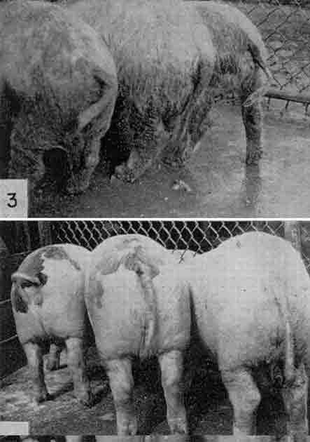
図１ 不全角化のブタ（＃３：サプレメンテーション前）。0.02%炭酸亜鉛サプレメンテーション後８週間（＃４）（56）。（Proc. Soc. Exp. Biol. Med.より転載許可）
亜鉛塩で治る成長低下は、高濃度の大豆タンパク質濃縮液の食餌を与えた若いニワトリにも起きたと、報告された。この濃縮液は0.5%のフィチン酸リンを含み、オデル（Boyd O’Dell）は、フィチン酸が亜鉛その他のミネラルの有用性を大きく低下させることを、自分自身および他の人たちの事実を展望した（58）。
1960年代にプラサド（Anasta Prasad）たちはヴァンダービルト大学への研究費を使って、エジプトの10代の少年の矮化と性機能低下を研究し、彼らの貧血が鉄塩によって直されたのとともに、彼らの血漿亜鉛濃度が低いことを見つけた（59）。次いで彼らは亜鉛のサプレメンテーションが成長と成熟を昂進させることを見出した（60）。次の２回の試験では明確な結果が得られなかったが、イランの同じようなグループで高いレベルの亜鉛（40mg/d）をサプリメントとして与えた試験ではポジティブな結果が得られた。ここでコントロール群もサプリメント群も他の微量ミネラルは与えられていた（表２）（61）。
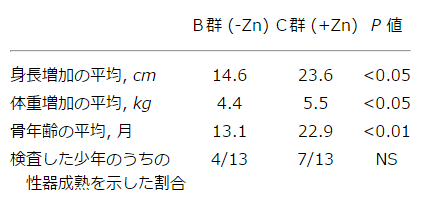
表２ 13才のイランの田舎少年を20人づつの亜鉛＋および亜鉛―の２つのグループに分けた結果1
1 一つのグループ（Ｂ）は学校のある日（6/wk）にタンパク質、トウモロコシ油、諸種ビタミン、亜鉛以外の諸種ミネラルを含む液状サプリメントが与えられた。他のグループ（Ｃ）は上記サプリメントに40mgの亜鉛が炭酸塩として与えられた。試験は20月続けられたが、中間にサプリメントが無い４月の休暇があった（61）。
1 一つのグループ（Ｂ）は学校のある日（6/wk）にタンパク質、トウモロコシ油、諸種ビタミン、亜鉛以外の諸種ミネラルを含む液状サプリメントが与えられた。他のグループ（Ｃ）は上記サプリメントに40mgの亜鉛が炭酸塩として与えられた。試験は20月続けられたが、中間にサプリメントが無い４月の休暇があった（61）。
この地域の少年たちの毎日の亜鉛摂取量はとくに低くはなかったが、彼らの主食は全粒パンとマメからなり、パンは酵母発酵がなされていないのでフィチン酸がそのまま入っていた。このこと、および彼らの土食（geophagia）によって、消化されない亜鉛複合体が消化管内で作られていた（58,62）。成長低下および成熟遅延は少女および少年で研究したトルコの村でも同様に観察された（63）。
ナイアシンとセレンについて取り扱った前セクションの場合と同じように、亜鉛についても、食事中のある栄養素の全濃度の分析だけでは、適当量かどうかの充分な基準にならず、もっと複雑な生物学的有用性の問題に直面しなければならないことが、明らかになった（64）。一つのミネラルの摂取を増やすと、他の吸収を妨害する事実が得られた（65）。セレン、クローム、ナイアシン（その他のＢ-ビタミンも）について、有用性は化学形またはその栄養素が存在する組み合わせによって影響された。
銅欠乏の動物では正常のエラスチンが合成されない結果、動脈壁は非常に弱くなった（66）。多くのヒトの食事では亜鉛：銅の比が高いので相対的な銅欠乏が起き、これが虚血性心疾患を高くする要因であると、示唆された（67）。
私は個々の栄養素の必要量を決定する研究については述べないようにしてきた。しかし、タンパク質は別問題である。どの２つのタンパク質も同じではないし、一つの食品からのタンパク質混合物は他の食品とも異なる。従って、我々の食事のアミノ酸パターンが我々の体タンパク質アミノ酸パターンにいかに近い必要があるかが問題であった。このことは実際問題として、植物タンパク質のバランスをとって食事を理想的にするためには、動物タンパク質または合成アミノ酸を加える程度が問題である。
研究者たちは個々のアミノ酸の要求から出発してこの問題を解決することを希望した。しかし1945年にはアミノ酸混合物をヒトの食事中のタンパク質で完全に置き換えることはできなかった。ローズと協同研究者たちは1942年以来この問題を解決すべく研究して、その結果を1948年から1955年のあいだに発表し（表３）（68-70）、最終の討論を1957年に行った（71）。
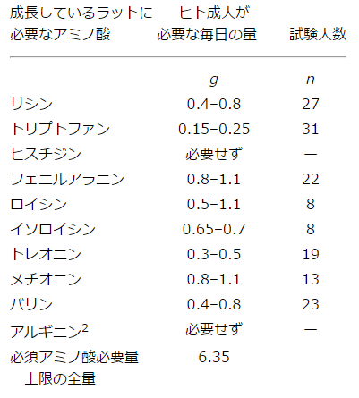
表３ ローズによる成長しているラットに必要なアミノ酸および若い男子が窒素出納に必要な量（68,69）1
1 グリシンと尿素はヒトの全窒素摂取量を10g/dにするために追加した。これは62.5gの粗タンパク質に相当する（167）。それぞれの必須アミノ酸を２倍にした次の実験で、尿素を除きグリシンを6.5g/dに減らしても窒素出納を保持することができた。この場合は食事中の窒素含量は3.85gであり、粗タンパク質24gに相当した（70）。
2 ラットはアルギニンを合成することができたが、最高の成長のための必要量は満足しなかった。したがって、必須とするか非必須とするかは単なる定義の問題である（68）。
1 グリシンと尿素はヒトの全窒素摂取量を10g/dにするために追加した。これは62.5gの粗タンパク質に相当する（167）。それぞれの必須アミノ酸を２倍にした次の実験で、尿素を除きグリシンを6.5g/dに減らしても窒素出納を保持することができた。この場合は食事中の窒素含量は3.85gであり、粗タンパク質24gに相当した（70）。
2 ラットはアルギニンを合成することができたが、最高の成長のための必要量は満足しなかった。したがって、必須とするか非必須とするかは単なる定義の問題である（68）。
彼らは若い男子が驚くべく低レベルのアミノ酸（24gタンパク質相当）で窒素出納を保つことを見出した。しかし、これは必要とされる完全なタンパク質よりもエネルギー摂取量が多いときだけであった（表４）。このことは困った結果であった。何故かと言うとエネルギー摂取が多いと窒素蓄積に影響することが知られていたからであった（72）。量的な必要性は疑問符つきではあったが、ローズはヒト成人が必要とする必須アミノ酸のリストは今や完全であると述べた。これらのアミノ酸のうちの一つでも欠けると、摂取がどのレベルであっても窒素出納の平衡が得られなかったからである（71）。
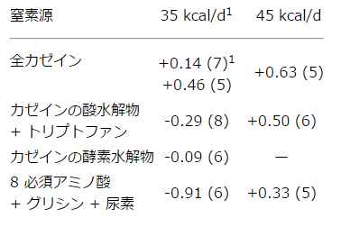
表４ 10g窒素/日で、全エネルギーが35または45kcal/日の実験対象者の窒素出納 （g/d）
1 実験期間（日）．
1 実験期間（日）．
第二次世界大戦後ドイツの食事配給は厳しく制限されていて、孤児院児童に種々の特別食を与えるのは倫理上、許されていたので、ウィドウソンとマッカンスはその影響を調査した。47人からなる一つのグループは食べられるだけのパン（85%抽出、すなわち全小麦ではないが褐色パン）、カルシウム、ビタミンのサプリメントと、少量のミルク（タンパク質8.8g）を与えられた。他のこれに対応するグループは３倍量の動物タンパク質を含む余分なミルクを与えられた。このような処理は注意深い観察のもとに6月続けられた。（表５）（73）。９-10才の子供たちはどちらの食事でも同じように成長した。一つのグループはエネルギーの12%がタンパク質由来で、そのうち14%だけが動物タンパク質（ある著者によると“第一級”）であったのにも関わらず。残念なことにこの重要な研究は多くの大学図書館では読むことができない一連のモノグラフとして刊行された。しかし、研究の一部は他で要約し論じられた（74）。
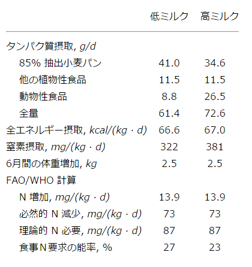
表５ ６月間、パンは無制限でミルク量が異なったさいの孤児院児童（73）
これらの孤児院児童は身長も体重も同年齢児の平均より約25%成長が速かった。これは多分“追いつき”現象であろう。我々の体タンパク質の半分以下のリシンしか含まないタンパク質からなる低タンパク質食でこのことが可能であったのは銘記に値する。ヒトの成長は非常に遅い。窒素摂取が322mg/（kg・d）であるのに増加は14mgN/（kg body wt・d）に過ぎなかった。タンパク質摂取が少なくても窒素出納が平衡になるのは、タンパク質の代謝回転（turnover）が遅く、感染したときの抗体の潜在的な合成を犠牲にしている可能性を、ＭＩＴの研究グループは示唆した（75）。これは重要な疑問であり、放射性アミノ酸を使って代謝回転と酸化によって測定する方法が1985年までに開発された（76）。しかし、決定的な回答は得られず、他の研究者はこのような測定によってタンパク質摂取量を増やすことへの用心を示唆した（77）。
さらに成長しているニワトリで食事中のタンパク質を20%から30%に高めると、制限必須アミノ酸のリシンの要求量が食事の0.85%から1.1%に増えることが示された（78）。ウィスコンシンのハーパー（Alfred Harper）たちは続いて、一つのアミノ酸をかなり高いレベルに加えると、たとえば若いラットに体重増加（９日に56g）を起こさせる12%カゼイン（メチオニン添加）食餌に２%ヒスチジンを加えると、食欲が無くなり体重増加が減る（この場合は45g）ことを示した（79）。これらの影響を毒性、拮抗作用、インバランス（訳注：アンバランスとは言わない）に分ける試みがなされた（80）。しかし、人間で実際に起きる事実は知られていない。高タンパク質の西側諸国食餌はアシドーシスを起こし、カルシウムが補償的に失われ、骨から失われる可能性も示唆された（81）。
したがって、この時期（1945-1985）は、少なくとも食事が穀類を基礎としているならばタンパク質の供給は問題でないことを示す研究で始まった（82）。それにも拘らず1960年に栄養学の大家は“ビタミン研究の時代からタンパク質研究の時代に移ってきている”と言い、ＦＡＯ（国連食糧農業機関：the Food and Agriculture Organization of the United Nations）の栄養部門の長は“食事中のタンパク質欠乏は世界でもっとも重篤で広範囲の問題である”と書いた（83-85）。
この考えは西アフリカの“クワシオルコール（kwashiorkor）”および進展途上国の１-４才の子供たちに見られる鱗状皮膚炎、毛髪の変化、浮腫、無感情を特徴とする重篤な疾患から生まれたものである（図2）（86）。これには脱脂乳粉末など濃縮高タンパク質サプリメントが有効であった。ナイアシンや他のＢ型ビタミンは有効で無かったので、ペラグラの幼児型であるという以前の考えは捨てられた（87）。
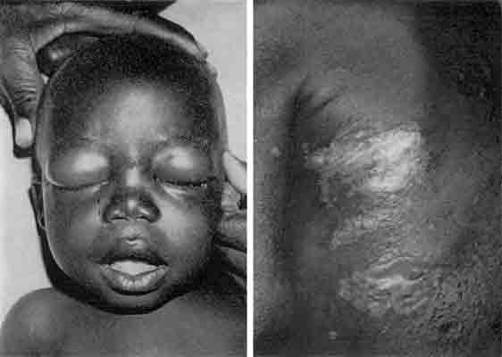
図２ クワシオルコール；顔の浮腫が特徴（左） 背中の皮膚の病変が特徴（右） （Dr. R. G. Whiteheadによる）
クワシオルコールは肝障害が特徴であり、肝硬変がアフリカの男性にふつう見られたので、最初はアフリカ人の食事は一生のあいだタンパク質不足であり、発展途上国でも同じであると、ＦＡＯは考えていた。ミルクと粉乳は高価で供給不足なので、代用品の開発が進められた（88）。
多くの研究は問題が存在する場所、たとえば中米およびパナマ栄養学研究所（the Institute for Nutrition in Central America and Panama）において、地域で得られる穀物や脂肪種子粉末から粉乳の安価な代用品を作り試験することが試みられた。粉乳のように急速な効果はなかったが、治療効果はあった（89）。乳児によってはタンパク質とエネルギーだけでなく電解質やビタミンの不足も見られた（90）。必須脂肪酸の欠乏も示唆された（91,92）。
1968年に国連は”切迫したタンパク質危機を防ぐ国際的な活動”と題する書類を刊行した（93）。それまでにかなりの予算（一部は政府から、一部は財団から）を使って、魚から安定な、溶液抽出した、高タンパク質粉末【fish protein concentrate（ＰＦＣ）】を生産する過程と機械を開発する幾つかの計画が、先進国で立ち上げられた。これは熱心な国際会議でも推進された。元来の考えは発展途上国の村で作れるような新しい産物や食品製作の簡単な方法であったにも拘らず。それに加えて“酵母、カビ、細菌を糖蜜から石油までの培地で育てて作る単細胞タンパク質（ＳＣＰ）”のような、高度の技術を使う方法が計画された（94）。カロウェイ（Doris Calloway）はSCP産物のあるものは免疫耐性が弱いときには有毒であること、および核酸濃度が高いので動物はともかくとしてプリンを難容性の尿酸にするヒトには適しないことなどを指摘した（95）。
幾分か未発達な生活共同体を助けることを目的としたにも関わらず、“ハイテク”計画となったことに、ロンドン大学の衛生・熱帯医学学部から厳しい批判が加えられた。“研究者にとって学問的に刺激的な研究と、研究費を集めるために政治的に魅力的な問題を、軽率に結びつけて、科学的な興奮を正当化する過程の続きである”と（96）。ふつう御機嫌を傷つけないようにしているアメリカにおいても、政府が金を出したＦＰＣ計画の指導者自らが後になって（読む価値のある本で）、“ＦＰＣ開発の動機の多くは、世間で知られた人道的なゴールと、ほとんど又はまったく関係が無かった”と書いた（97）。
これは栄養学の歴史のうちで、栄養学者たちが忘れたいと欲するエピソードであろう。しかし、歴史の重要性は自分たちの誤りを学んで、繰り返さなようにすることである。大部分のクワシオルコール患者たちはタンパク質だけでなくエネルギーも不足した食事を摂っているか、または子供たちが食べきれない量を摂取する必要のある食事を摂っていることが判って、この計画は終わることになった（98）。一般に必要なのはタンパク質だけを濃縮するのではなく、もっと濃縮した食品を準備し、電解質不足を正しくすることであった（99-101）。タピオカのように、かさばっていて、タンパク質の少ない根の食事を改良するのは困難であった（102）。前には“世界のタンパク質問題”を強調していた国際連合（UNO）は、1974年の世界食糧会議（World Food Conference）では何も述べることはしなかった（103）.
第三世界で第一制限アミノ酸になる必須アミノ酸の合成も、1960年代に推進された（104）。ヒトでの試みの結果は一般に不満足なものであったが、ブタやニワトリの集約飼育には実用化された（105）。
【その３】（３）に述べたように、多価不飽和脂肪酸リノール酸 18:2(n-6) 欠乏食で飼ったラットは、鱗だった尾をもち、水分を失い、増殖できないことが既に知られていた。シンボル 'n' または以前の文献では 'ω' は、炭化水素鎖の端から数えて不飽和結合に至るまでの、炭素原子の数である。
次の明白な疑問は人間にも同様な要件であるか否かであった。1963年に400人以上の幼児に脂肪含量が異なる食事を与える大きな研究がなされ、總エネルギーの0.1%以下がリノール酸の場合には皮膚が乾燥し厚くなり、多くの場合に成長が不満足であった。もっとリノール酸を与えると、問題は急速に消失した（106）。非経口的栄養補給をしなければならない幼児で脂質を摂取しないと、同じような欠乏症状が急速に見られた（図３）（107）。一例ではリノール酸が多い油を皮膚に塗ることによって、この状態を急速に改善させることができた（108）。
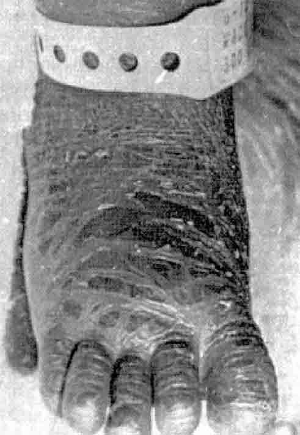
図３ 無脂肪の静脈栄養によってリノール酸欠損を起こした幼児の足（107）。（Am.J.Clin.Nutr. より転載許可）
ラットを用いた元来の実験によって、吸収されたかなりの割合のリノール酸はガンマ-リノレン酸 18:3(n-6) になり、次いでアラキドン酸 20:4(n-6) になることが示された。ガンマ-リノレン酸はメマツヨイグサ油または若干の植物から得ることが出来、ある種の皮膚病の治療に有効なことが知られていた。これは多分これらの患者はリノール酸からアラキドン酸を合成する能力に欠陥があったのであろう（109）。
リノール酸の供給が不足すると、非必須脂肪酸のオレイン酸 18:1(n-9) からかなり大量のエイコサトリエン酸 20:3(n-9) が合成されるようになる（110,111）。血液中のエイコサトリエン酸：アラキドン酸比は臨床症状が出現する前にぎりぎりのリノール酸欠乏の指標であることが判った。最初にラットとブタで知られ、次に人間で示された（106,112,113）。
ネコはまったく違う結果を与えた。食餌にアラキドン酸が必要で、リノール酸の鎖を延長し不飽和にする酵素を持っていなかった（114）。これはカロチンをレチノールにできないことと関連している。ネコは肉食なので出来合いのレチノールとアラキドン酸を得ることが出来るので、動物界で必要なこれらの分子を植物の前駆体から作る必要が無いからである。このことから、他の動物でリノール酸はアラキドン酸の前駆体としての役割しか持っていないと考えられた。しかし後になって、ラット皮膚の耐水性は表皮スフィンゴリピドにリノール酸が組み入れられて起きることが示された（115）。
ガンマ-リノレン酸 18:3(n-6) も又リノレン酸の一つと考えられるので、 18:3(n-3) 型にはα-の接頭辞を常に使わなければならないが、実際的にはリノレン酸と言ったらα-リノレン酸を意味している。バー夫妻の先駆的研究では、リノレン酸はリノール酸を完全に置き換えた。しかし、後の研究者たちは多分もっと純粋な試薬を使ったからか、このことは見られなかった（116,117）。3世代にわたる慎重な実験で、ラットはリノール酸で正常に成長したが、リノレン酸では成長できなかった（118）。しかし、リノレン酸から生じたドコサヘキサエン酸 22:6(n-3) がラットの体内に貯まることが判り、他の研究者は網膜の桿状細胞の外節に特に濃縮されていることを見出した（119）。これに対して、魚は正常の成長に n-3 酸を必要とすることには疑問の余地は無い（120）。
1982年に、非常に少量のリノレン酸しか含まない処方の非経口栄養を数年にわたって受けていた６才の少女で視力がぼんやりするなどの神経症状が始まった。処方を変えてリノレン酸を増やしたところ、この症状は消失した（121）。赤毛猿をリノレン酸を含まない餌で飼い、その赤ん坊も同じ餌を与えたところ、12週後にコントロール群と比べて選択視の鋭さが悪化した（122）。リノレン酸すなわち長鎖 n-3 脂肪酸が食餌中に必要と結論するのは正しいであろう。
動物の男性補助腺（訳注：前立腺）の抽出液が血管拡張作用を持つことは古くから知られていた。1963年にストックホルムのベルグストレーム（Sune Bergstr
m）達はこれらの活性物質を C20- サイクロペンタノン酸の誘導体として’プロスタグランジン’と名付けた（123）。２年後に彼らはこれらが体内でアラキドン酸から合成されることを示し、必須脂肪酸（ＥＦＡ）欠乏の少なくともあるものはプロスタグランジン ホルモンの不十分な合成によることを示唆した（124）。後になって、食事中のリノール酸含量を増やすとプロスタグランジン合成が増えることが示された（125）。我々は後のセクション“多価不飽和脂肪酸”において、全く別の研究の結果かたこれらの重要性が再浮上し、この問題に戻ることになる。以下は1957年からの引用である。“この世紀の最初の半世紀のほとんど全部の間‥‥欠乏病と低栄養の問題が強調されてきた。公衆栄養のプログラムは主としてミルク、肉、卵の消費増加‥‥や実際的にふつうの食事のすべてに‥‥専念してきた。‥‥“安全のための余裕”という言葉は、過剰が制限より好ましい‥‥という考えに基礎を置いている‥‥。栄養学者たちはこの国における肥満の発生率にどの程度責任があるか、考える必要がある。‥‥過去の定義で“よい食事”と言われたものは、動脈硬化、糖尿病、主として高収入の人々がかかる他の病気の重要な原因である可能性が強く、ほとんど決定的である”。このことを知ってきた人たちは、ヘーグステッド（Mark Hegsted）の明快で独創的な表明に承認するであろう（126）。
第二次世界大戦の後、ある意味でもっとも豊かな国は最高の健康記録を持っていないことが知られるようになり、上に述べられたように彼らの食事パターンは中年の慢性で非感染性の病気に導くものであることが知られるようになった。成人における長期の影響についての事実は、疫学的研究によって得られた。驚くことは、戦争中にヨーロッパの国で食べ物の供給、とくに動物性食品の供給が厳しく制限されたときに、ある種の病気の発生率が低下したことであった（127-129）。
豊かな国の食事でまず疑われるのは、高いレベルの飽和脂肪摂取と低いレベルの繊維（ある研究者の考えでは砂糖の高い消費が関係する）摂取である。まず、食事中の脂質に関係する研究を考察しよう。
西側諸国における重要な死亡原因は虚血性心疾患（ＩＨＤ）であった。これは心筋への血液供給の減少であり、これによって壊死すなわち心筋梗塞が起きる。ＩＨＤ患者の解剖では動脈硬化、すなわちコレステロールを多く含むプラークが壁に付着することにより、冠状動脈の狭窄が見られる。これは長いあいだ病理学者のあいだで興味を持たれていた。1934年に次のように書かれていた。“動脈硬化と食事、血圧、人種などと関係して文献には多数の報告がなされている”。そしてその後で、“‥‥中性脂肪の摂取が少ないところでは、動脈硬化は多くない”（130）、と。しかし第二次世界大戦（WWII）の前にこのことは栄養学者の注意を惹かなかった。
大部分の西側諸国風の食事の特徴はエネルギーの多くの部分が脂肪、しかも大部分は動物由来の脂肪であった。したがって第一の考えはＩＨＤの問題は動物性食品だけに見られるコレステロールを大量に摂取するためと考えられた。コレステロールをふだん摂取しないモルモットその他の草食動物にコレステロールを与えると、血清コレステロール濃度が上がり、プラークの出来ることが見出された。しかし、ヒトで研究すると、いろいろの種類の脂肪を与えることによって、食事中のコレステロールはある程度の影響を受けたが、コレステロールの寄与に応じて、血清コレステロールが影響を受けることはなかった（131-133）。
1950年からキーズ（Ancel Keys）は、種々の国からの協同研究者と研究しながら、アメリカおよびヨーロッパの種々の部分におけるＩＨＤ流行の多くの環境様相を研究した。彼はまずナポリから始めた。それは脂肪からのエネルギーはアメリカの半分、すなわち20% vs 40%であり、変性心疾患で死亡する30-50才の男子はアメリカの三分の一またはそれ以下であったからである（134）。死因の分類は国によって異なるが、すべての他の原因はイタリーとアメリカは同じように記録されていたので、イタリーの全死亡率が低いのは主として変性心疾患によるものと思われた（135）。中年になっての血清コレステロールレベルは、ナポリではアメリカやイギリスのように上昇していなかった。全脂肪の摂取が決定因子であり、体運動や肥満の程度よりもずっと重要と考えられた（136）。
1954年にニューヨークのロックフェラー財団は、植物由来の脂肪は動物由来の脂肪を含む同じ食事よりも、血清コレステロールレベルをかなり低く保つ（1.55 vs 1.96 g/L）と発表した（137）。種々の植物および陸棲動物の脂肪を比べたところ、動物であろうと植物であろうとヨウ素値が高いほど（不飽和度が高いほど）コレステロールの低いことを、このグループは見出した（138）。
アメリカの虚血性心疾患死亡率と種々の食事の特徴との関連を比較して、この死亡率と“飽和脂肪由来エネルギーのパーセンテージ”との相関の強いことが1959年に報告された（139）。キーズもまた16の異なるコミュニティからなる“７ヶ国スタディ”において、虚血性心疾患による死亡とこのパーセンテージとの間に相関係数0.84の強い正の関連のあることを示した（134）。彼の調査結果を国籍でまとめた結果は、表６に示される。アメリカや他の国のコミュニティにおいて飽和脂肪の摂取量が同程度のところは、虚血性心疾患による死亡が類似していて、摂取が低い地中海沿岸の国々のほぼ３倍であった。このことは1956年に私の友達の言葉によって実証された。彼によると、彼のギリシャ系アメリカ人でビジネスマンの父はボストンで心臓発作で最近亡くなったが、一方、彼の祖父は祖国のギリシャの農園で健康的で元気に暮らしているとのことだった。
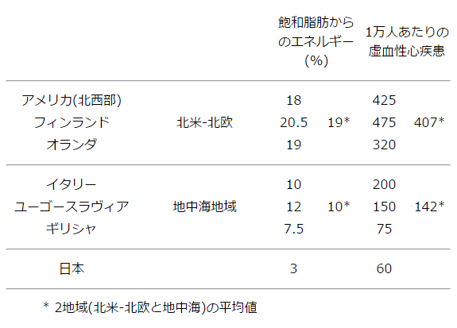
表６ 40〜59歳男子の10年間の虚血性心疾患（ＩＨＤ）による国別の死亡率と飽和脂肪によるエネルギー。キーズ, 1980（73）より再計算
さらに沢山の疫学的研究があり、その内あるものは人種による罹患性の違いを除くために、海外移住者と移住しなかった人たちの健康記録を比較した（140）。ある調査ではカリフォルニアに移住して少なくとも部分的に食事がアメリカ的になった日本人の虚血性心疾患（ＩＨＤ）は、日本の対応する住民の非常に低い罹患率のほぼ３倍であった（141）。
だれもアメリカ人に日本食を摂るように説得することはできないので、“地中海食事”は実践できる理想になり始めた。しかし、“地中海食事”は1950年および1960年代にどのような構成だったろうか？ かなり大きな違いがあった。ユーゴスラビアの一つの研究地域では１日96gの魚を食べ、他の研究地域では皆無であったが、ＩＨＤ死亡率は似ていた。ギリシャ人コミュニティでは１日35gの肉しか食べず、一つのユーゴスラビア人コミュニティでは１日200gであったが、ＩＨＤ死亡率はやはり似ていた。ギリシャ人およびイタリア人のコミュニティは大量の果物と野菜を消費していたが、ユーゴスラビア人はオランダ人やアメリカ人のグループより多くはなかった（142,143）。
ジェイムズと共同研究者が提出した、地中海食事は“保護作用がある（安全である）のか、または毒性が無いのか”の疑問は解決されないままである（144）。他の国のもっと豊かな食事は、水素添加された油からのトランス-脂肪酸の存在によって悪化したのか、葉物野菜からの抗酸化物の不足によるのであろうか？ 1985年にこれらの疑問は将来の研究に任せられていた。
コレステロールはタンパク質と結合して血液中で運ばれる。1950年にバークレー・グループは血清リポタンパク質を分離する方法を開発し、低密度-またはβ-リポタンパク質が高いと動脈硬化の危険が高くなることを示唆した。1959年にオルソン（Robert Olson）はこの分画が重要である事実を提供した。1977年にNIHの膨大なフラミンガム（Framingham）研究は、リポタンパク質の調査が行われていた79人の冠状動脈死の解析によって、最高の危険はＨＤＬすなわちα-リポタンパク質のコレステロールが低いヒトであることを示した。44mg/100mLまたはそれ以下なら、105/1,000であり、それより多い場合、48/1,000であることを示した（147）。言い換えると、HDLは良い形のコレステロールであった。しかし、この形のコレステロールは全体の一部に過ぎないので、全ステロールを測定した以前の研究は今でも価値がある。
学術研究会議（ＮＲＣ）の、ガンに対する食事と栄養の影響を研究する委員会は1982年に、“食事のすべての成分を研究した限りで、疫学的および実験的な事実を総合すると、脂肪摂取とガン‥‥とくに乳がん、直腸がん‥‥の間の原因関係が最も強く示唆される。コレステロールとガン危険率の関係はあまりも制限が多いので、結論を出すことが出来ない”と報告した（148）。
以前のセクションで述べたように多価不飽和脂肪酸（ＰＵＦＡ）は、 C-20 に鎖を延ばし、種々のホルモン活性を持っているプロスタグランジンを作ることが示された。とくにプロスタグランジンのあるものは血小板の凝固を促進するが、あるものは主として阻害する（149）。このことは多価不飽和脂肪酸を多く消費する人たちで動脈壁のプラーク（アテローム斑）生成の少ないことを説明できた。
また、多価不飽和脂肪酸が血圧降下作用を示すのは、プロスタグランジン類合成のバランスが好適な状態のためとまず考えられた（150）。しかし、プロスタグランジン類をラットに注射すると、短時間の効果しか見られなかった。これは多分プロスタグランジンは不安定であり、作用する組織で合成されなければならなかったからであろう（120）。
植物の不飽和脂肪が動物の飽和脂肪に比べて、人間でもラットでも、血清コレステロールレベルを下げることが最初に見つかったときに、これまで知られている必須脂肪酸（ＥＦＡ）すなわちリノール酸および多分リノレン酸が多いためと考えられた。魚油は不飽和度は高いものの上記の2種の脂肪酸は少ないので、血清コレステロールを低下させるとは思っていなかった。しかし実際は、ヒトに対してもラットに対しても、魚油は植物油と同じまたはそれ以上に有効であった（151-153）。
続いて魚油は血清脂質を下げるだけでなく、虚血性心疾患予防に有効なことが示唆された。魚油の多価不飽和脂肪酸 C20:5(n-3) エイコサペンタエン酸からのプロスタグランジンは、植物のリノレン酸誘導体である C20:4(n-6) 由来のものより、血小板凝固を抑える効果の極めて大きいことが示された（154）。魚油の効果は続いての研究で示されたが、出血時間がある程度長くなることが観察された（155）。
この期間の最後にオランダから、魚を毎日ゼロから45gまで摂取する800人以上の中年男性の追跡結果が報告された。20年の研究で78人が虚血性心疾患（ＩＨＤ）で死亡し、“高度消費者”の危険率は消費しない人たちの42%に過ぎず、消費が増えるほど危険率の低下傾向が見られた（156）。
アフリカの異なる場所で長年の経験をもった２人の医師がそれぞれ、工業国ではふつうである非感染性疾患が、その地ではあまりに少ないことに印象を受けた。1969年にバーキット（Denis Burkitt）は35〜64歳の男性で結腸と直腸のガンが、コネチカットでは東アフリカの約10倍であり、プエルトリコや多くのアジアの国はその中間であることを、指摘した。彼は“腸のガンその他の非感染性の病気は調べたところ、残渣が多い食事の国では稀で、残渣が少ない食事の国では普通である。異常な腸内細菌叢の作用で作られた発ガン物質が腸粘膜と長いあいだ接触しているのが、これらの病気の発現率が多い理由であろう‥‥”（157）。1972年にトロウェル（Hugh Trowell）は発展途上国で人たちを虚血性心疾患（ＩＨＤ）から守っているのは食物性繊維が多いことであろうと示唆した（158）。これらやその他の論文に続いて食事における繊維の役割に興味が持たれるようになったが、食物繊維にはいろいろな種類があって定義の困難なことが理解された。それに加えて果物や野菜を大量に食べることによって繊維を多く摂取している人々は、タンパク質や脂肪の摂取は少ない傾向があった。ここで３つの論文を引用しよう。ミネソタ大学のキーズらは、脂肪を一定にして、穀物やショ糖の代わりに大量の果物と野菜を与えることによって、血漿コレステロールは10%低下したが、これは必ずしも繊維が増えたためとは言えなかった（159）。オーストラリアの研究では、15g/dの柑橘類ペクチン（いわゆる“水溶性繊維”）は緩下剤の作用は無いが血漿コレステロールを13%低下させたが、セルロースは緩下剤の効果しか無かった（160）。大腸で繊維が発酵すると短鎖脂肪酸（ＳＣＦＡ）量を増加させ、これが抗ガン作用を持つ可能性が示唆された（161）。
この期間に、西側諸国風の食事を摂っている共同体では種々の非感染性の成人病の多い事実が強く認められた（162,163）。西側諸国風の共同体でも菜食主義者は虚血性心疾患の危険性が低いことが観察されたが、これが果物と野菜（したがって繊維）の摂取が多いからか、動物性脂肪の摂取が少ないからかは明らかでない（164）。食物繊維の緩下剤作用は評価され続けているが、繊維の少ないことが西側諸国風の食事を摂っている住民で大腸ガンが多いことに直接の原因となる特異的な因子であるか否かは証明されていない（148,165）。また南アフリカで、町（訳注：南アフリカでは黒人居住地区）に移って繊維が少ない西側諸国風の食事を摂るようになったアフリカ人で、直腸ガンのやはり少ないことが確かめられた（166）。
ある人々にとって栄養科学は実質的には1945年までに完成したように見えたが、40年後になってもそうではなかった。
人々が栄養学的な助言を入れるようになったとともに、煙草を吸わなくなったことや良い薬品が手に入るようになったので、裕福な国々では虚血性心疾患が減ってきている。しかし、肥満およびそれに伴う糖尿病の問題はいまだに増加していて、栄養科学は運動をしていない人たちには容易な解答を与えることができないでいる。1985年までに技術は進歩したが、人間機械は同じである。一部の人々はこれまでの労働-休息サイクルを逆にしている。すなわち、仕事（および旅行）を座って行い、休息をトレッドミル上でとっている。
200年にわたる先輩たちの努力と素晴らしい成果を敬意をもって振り返ることができる。それとともに特定の個人や住民の統計的平均の人々についてしなければならないことが残っている。食品中にあって病気に抵抗する役割を持っているような栄養素ではない化学物質についての研究は、ほんの始まったばかりである。